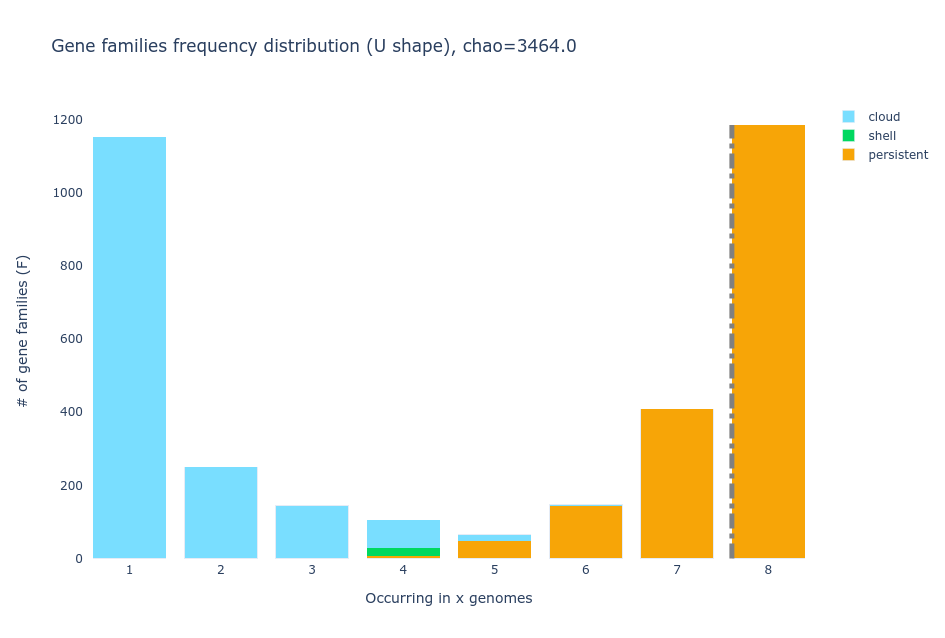
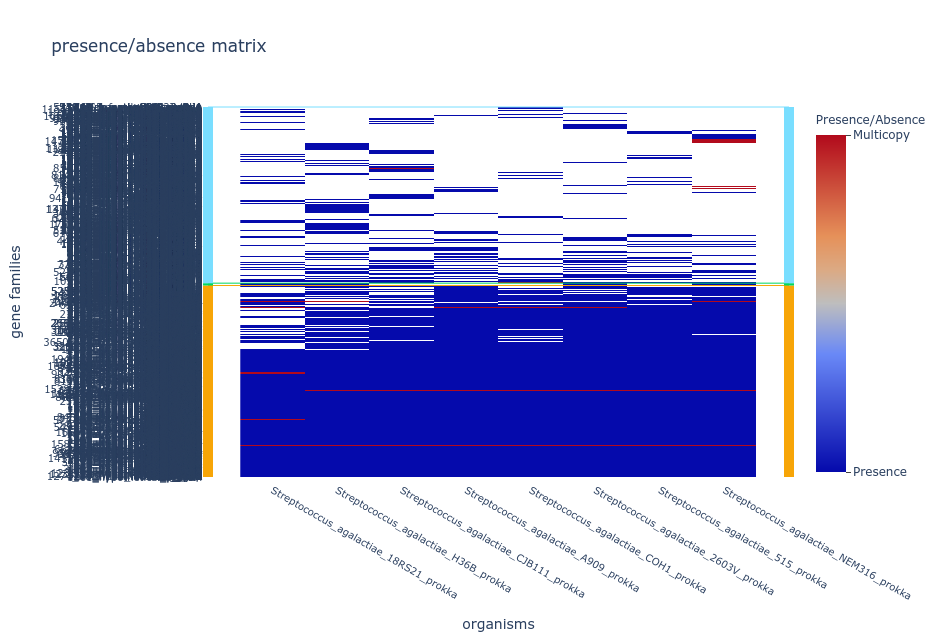

All in One View
Content from Introduction to Pangenomics
Last updated on 2026-02-20 | Edit this page
Estimated time: 25 minutes
Overview
Questions
- What is a pangenome?
- What are the components of a pangenome?
Objectives
- Gain insights into the origin and significance of pangenomics, and comprehend its fundamental principles.
- Acquire a comprehensive understanding of pangenome structure, including the classification of pangenomes based on their element composition.
Unveiling the Genomic Complexity: The Pangenome Paradigm
A brief history of the concept “Pangenome”
The concept of Pangenomics was created by Tettelin et al., whose goal was to develop a vaccine against Group B Streptococcus (GBS, or Streptococcus agalactiae), a human pathogen causing neonatal infections. Previous to this, reverse vaccinology had been successfully applied to Neisseria meningitidis using a single genome. However, in the case of S. agalactiae, two complete sequences were available when the project started. These initial genomic studies revealed significant variability in gene content among closely related S. agalactiae isolates, challenging the assumption that a single genome could represent an entire species. Consequently, the collaborative team decided to sequence six additional genomes, representing the major disease-causing serotypes. The comparison of these genomes confirmed the presence of diverse regions, including differential pathogenicity islands, and revealed that the shared set of genes accounted for only about 80% of an individual genome. The existence of broad genomic diversity prompted the question of how many sequenced genomes are needed to identify all possible genes harbored by S. agalactiae. Motivated by the goal of identifying vaccine candidates, the collaborators engaged in active discussions, scientific drafts, and the development of a mathematical model to determine the optimal number of sequenced strains. And, this is how these pioneering authors introduced the revolutionary concept of the pangenome in 2005.
The term “pangenome” is a fusion of the Greek words pan, which means ‘whole’, and genome, referring to the complete set of genes in an organism. By definition, a pangenome represents the entirety of genes present in a group of organisms, typically a species. Notably, the pangenome concept extends beyond bacteria and can be applied to any taxa of interest, including humans, animals, plants, fungi, archea, or viruses.
Pizza pangenomics
Do you feel confused about what a pangenome is? Look at this analogy!
Imagine you’re on a mission to open the finest pizza restaurant, aiming to offer your customers a wide variety of pizzas from around the world. To achieve this, you set out to gather all the pizza recipes ever created, including margherita, quattro formaggi, pepperoni, Hawaiian, and more. As you examine these recipes, you begin to notice that certain ingredients appear in multiple pizzas, while others are unique to specific recipes.
In this analogy, the pizza is your species of interest. Your collection of pizza recipes represents the pangenome, which encompasses the entire diversity of pizzas. Each pizza recipe corresponds to one genome, and its ingredients to genes. The “same” ingredient (such as tomato) in the different recipes, would constitute a gene family. Within these common ingredients, there may be variations in brands or preparation styles, reflecting the gene variation within the gene families.
As you continue to add more recipes to your collection, you gain a better understanding of the vast diversity in pizza-making techniques. This enables you to fulfill your objective of offering your customers the most comprehensive and diverse pizza menu.
The components and classification of pangenomes
The pangenome consists of two primary components or partitions: core genome and accessory genome. The core genome comprises gene families that are present in all the genomes being compared, while the accessory genome consists of gene families that are not shared by all genomes. Within the accessory genome, we can further distinguish two partitions, the shell genome, which encompasses the gene families found in the majority of genomes, and the cloud genome, which comprises gene families present in only a minority of genomes. It is worth mentioning that, the specific percentages used to define these partitions may vary across different pangenome analysis software and among researchers. Additional terms such as persistent genome and soft-core genome are also commonly used in the field for the groups of genes that are in almost all of the genomes considered.
Exercise 1(Begginer): Pizza pangenomics
What are the partitions in your pizza pangenome?
Solution
During your expedition of gathering pizza recipes you find that only flour, water, salt, and yeast are in all the recipes, this is your pizza core genome. Since the vast majority of pizzas have tomato sauce and cheese (believe it or not, there are white pizzas without tomato sauce and pizzas without cheese), you put the tomato and the cheese in the soft-core genome. Other ingredients like basil and olive oil are very common so they go to the shell genome, and finally the weirdos like pineapple go to the cloud genome.
The concept of pangenome encompasses two types: the open pangenome and the closed pangenome. An open pangenome refers to a scenario where the addition of new genomes to a species leads to a significant increase in the total number of gene families. This indicates a high level of genomic diversity and the potential acquisition of new traits with each newly included genome. In contrast, a closed pangenome occurs when the incorporation of new genomes does not contribute significantly to the overall gene family count. In a closed pangenome, the gene family pool remains relatively stable and limited, indicating a lower degree of genomic diversity within the species.
{kind=link}
To understand these concepts better, we can visualize the pangenome as a matrix representing the presence (1) or absence (0) of orthologous gene families. The columns represent the gene families, while the rows represent the genomes added to the pangenome. In an open pangenome, the number of columns increases significantly as new genomes are added. Conversely, in a closed pangenome, the number of columns remains relatively unchanged as the number of genomes increases. This suggests that the species maintains a consistent set of gene families. Consequently, the size of the core genome in a closed pangenome closely matches that of a single complete genome of the species. In contrast, the core size of an open pangenome is relatively smaller compared to the size of an individual genome.
In summary, the terms “open pangenome” and “closed pangenome” describe the dynamic nature of gene content in a species, with the former signifying an expanding gene family pool and the latter representing a more stable gene family repertoire.
Exercise 2(Begginer): Open or closed?
The size of a pangenome can be influenced by factors such as the extent of gene transfer, interactions with other species in the environment they co-habit, the diversity of niches inhabited, and the lifestyle of the species, among others.
Considering a human lung pathogen and a soil bacterium, which one do you believe is more likely to have a closed pangenome, characterized by a relatively stable gene pool, and why?
Based on the assumption that a human lung pathogen may have a more specialized lifestyle and limited exposure to diverse environments, it is likely to possess a closed pangenome. In contrast, a soil bacterium, which encounters a wide range of ecological niches and interacts with various organisms, is more likely to have an open pangenome. However, these assumptions are not always true. Thus, further investigation and analysis are required to confirm these assumptions for the different species of interest.
Know more
If you want to read more on pangenomics go to the book The Pangenome edited by Tettelin and Medini.
Genome database for this workshop
Description of the dataset
In this lesson, we will follow a standard pangenomics pipeline that involves genomic annotation, clustering of genes to identify orthologous sequences and build the gene families, and analyzing the pangenome partitions and openness. To illustrate these concepts, we will work with a dataset consisting of eight strains of Streptococcus agalactiae as included in the pioneering pangenome study by Tettelin et al., 2005 (See the Table below).
We already have the genomes of strains 18RS21 and H36B available in
our pan_workshop/data directory. However, the remaining
strains will be downloaded and annotated in the upcoming episodes,
allowing us to explore the complete dataset.
General description of the S. agalactiae genomes
| Strain | Host | Serotype |
|---|---|---|
| S. agalactiae 18RS21 | Human | II |
| S. agalactiae 515 | Human | Ia |
| S. agalactiae A909 | Human | Ia |
| S. agalactiae CJB111 | Human | V |
| S. agalactiae COH1 | Human | III |
| S. agalactiae H36B | Human | Ib |
| S. agalactiae NEM316 | Human | III |
| S. agalactiae 2603V/R | Human | V |
Prepare your genome database
Make sure you have the pan_workshop/ directory in your
home directory. If you do not have it, you can download it with the
following instructions.
- A pangenome encompasses the complete collection of genes found in all genomes within a specific group, typically a species.
- Comparing the complete genome sequences of all members within a clade allows for the construction of a pangenome.
- The pangenome consists of two main components: the core genome and the accessory genome.
- The accessory genome can be further divided into the shell genome and the cloud genome.
- In an open pangenome, the size of the pangenome significantly increases with the addition of each new genome.
- In a closed pangenome, only a few gene families are added to the pangenome when a new genome is introduced.
Content from Downloading Genomic Data
Last updated on 2026-02-20 | Edit this page
Estimated time: 45 minutes
Overview
Questions
- How to download public genomes by using the command line?
Objectives
- Explore
ncbi-genome-downloadas a tool for fetching genomic data from the NCBI.
Getting Genomic Data from the NCBI
In the previous
episode, we downloaded the working directory for this workshop that
already contains the genomes of GBS strains 18RS21 and
H36B within our pan_workshop/data directory.
However, we need another six GBS strains that will be downloaded in this
episode. For this purpose, we will learn how to use the specialized
ncbi-genome-download package, which
was designed to automatically download one or several genomes directly
from the NCBI by following specific filters set by user.
The ncbi-genome-download package can be installed with
Conda. In our case, we have already installed it into the environment
under the same name. To use the package, we just have to activate the
ncbi-genome-download conda environment.
Know more
If you want to know more about what is conda and its environments visit this link.
To start using the ncbi-genome-download package, we have
to activate the conda environment where it was installed
OUTPUT
(ncbi-genome-download) $For practicality, the prompt will be written only as $
instead of (ncbi-genome-download) $.
Exploring the range of options available in the package is highly recommended in order to choose well and get what you really need. To access the complete list of parameters to incorporate in your downloads, simply type the following command:
OUTPUT
usage:
ncbi-genome-download [-h] [-s {refseq,genbank}] [-F FILE_FORMATS]
[-l ASSEMBLY_LEVELS] [-g GENERA] [--genus GENERA]
[--fuzzy-genus] [-S STRAINS] [-T SPECIES_TAXIDS]
[-t TAXIDS] [-A ASSEMBLY_ACCESSIONS]
[-R REFSEQ_CATEGORIES]
[--refseq-category REFSEQ_CATEGORIES] [-o OUTPUT]
[--flat-output] [-H] [-P] [-u URI] [-p N] [-r N]
[-m METADATA_TABLE] [-n] [-N] [-v] [-d] [-V]
[-M TYPE_MATERIALS]
groups
-F FILE_FORMATS, --formats FILE_FORMATS
Which formats to download (default: genbank).A comma-
separated list of formats is also possible. For
example: "fasta,assembly-report". Choose from:
['genbank', 'fasta', 'rm', 'features', 'gff',
'protein-fasta', 'genpept', 'wgs', 'cds-fasta', 'rna-
fna', 'rna-fasta', 'assembly-report', 'assembly-
stats', 'all']
-g GENERA, --genera GENERA
Only download sequences of the provided genera. A
comma-separated list of genera is also possible. For
example: "Streptomyces coelicolor,Escherichia coli".
(default: [])
-S STRAINS, --strains STRAINS
Only download sequences of the given strain(s). A
comma-separated list of strain names is possible, as
well as a path to a filename containing one name per
line.
-A ASSEMBLY_ACCESSIONS, --assembly-accessions ASSEMBLY_ACCESSIONS
Only download sequences matching the provided NCBI
assembly accession(s). A comma-separated list of
accessions is possible, as well as a path to a
filename containing one accession per line.
-o OUTPUT, --output-folder OUTPUT
Create output hierarchy in specified folder (default:
/home/betterlab)
-n, --dry-run Only check which files to download, don't download
genome files. Note
Importantly, when using the ncbi-genome-download
command, we must specify the group to which the organisms we
want to download from NCBI belong. This name must be indicated at the
end of the command, after specifying all the search parameters for the
genomes of interest that we want to download. The groups’ names include:
bacteria, fungi, viral, vertebrates_mammalian, among others.
Now, we have to move into our data/ directory
If you list the contents of this directory (using the ls
command), you’ll see several directories, each of which contains the raw
data of different strains of Streptococcus agalactiae used in
Tettelin
et al., (2005) in .gbk and .fasta
formats.
OUTPUT
agalactiae_18RS21 agalactiae_H36B annotated_miniDownloading several complete genomes could consume significant memory and time. It is essential to ensure the accuracy of the filters or parameters we use before downloading a potentially incorrect list of genomes. A recommended strategy is to utilize the –dry-run (or -n) flag included in the ncbi-genome-download package, which conducts a search of the specified genomes without downloading the files. Once we confirm that the list of genomes found is correct, we can proceed with the same command, removing the –dry-run flag
So, first, let’s confirm the availability of one of the genomes we aim to download, namely Streptococcus agalactiae 515, on NCBI. To do so, we will employ the –dry-run flag mentioned earlier, specifying the genus and strain name, selecting the FASTA format, and indicating its group (bacteria).
BASH
$ ncbi-genome-download --dry-run --genera "Streptococcus agalactiae" -S 515 --formats fasta bacteria OUTPUT
Considering the following 1 assemblies for download:
GCF_012593885.1 Streptococcus agalactiae 515 515Great! The genome is available!
Now, we can proceed to download it. To better organize our data, we
can save this file into a specific directory for this strain. We can
indicate this instruction with the --output-folder or
-o flag followed by the name we choose. In this case, will
be -o agalactie_515. Notice that now we no longer need the
flag the -n.
BASH
$ ncbi-genome-download --genera "Streptococcus agalactiae" -S 515 --formats fasta -o agalactiae_515 bacteriaOnce the prompt $ appears again, use the command
tree to show the contents of the recently downloaded
directory agalactiae_515.
OUTPUT
agalactiae_515
└── refseq
└── bacteria
└── GCF_012593885.1
├── GCF_012593885.1_ASM1259388v1_genomic.fna.gz
└── MD5SUMS
3 directories, 2 filesMD5SUMS file
Apart from the fasta file that we wanted, a file called
MD5SUMS was also downloaded. This file has a unique code
that identifies the contents of the files of interest, so you can use it
to check the integrity of your downloaded copy. We will not cover that
step in the lesson but you can check this article
to see how you can use it.
The genome file
GCF_012593885.1_ASM1259388v1_genomic.fna.gz is a compressed
file located inside the directory
agalactiae_515/refseq/bacteria/GCF_012593885.1/. Let’s
decompress the file with gunzip and visualize with
tree to corroborate the file status.
BASH
$ gunzip agalactiae_515/refseq/bacteria/GCF_012593885.1/GCF_012593885.1_ASM1259388v1_genomic.fna.gz
$ tree agalactiae_515/OUTPUT
agalactiae_515/
└── refseq
└── bacteria
└── GCF_012593885.1
├── GCF_012593885.1_ASM1259388v1_genomic.fna
└── MD5SUMS
3 directories, 2 filesGCF_012593885.1_ASM1259388v1_genomic.fna is now with
fna extension which means is in a nucleotide
fasta format. Let’s move the file to the
agalactiae_515/ directory and remove the extra content that
we will not use again in this lesson.
BASH
$ mv agalactiae_515/refseq/bacteria/GCF_012593885.1/GCF_012593885.1_ASM1259388v1_genomic.fna agalactiae_515/.
$ rm -r agalactiae_515/refseq
$ ls agalactiae_515/OUTPUT
GCF_012593885.1_ASM1259388v1_genomic.fna Download multiple genomes
So far, we have learned how to download a single genome using the
ncbi-genome-download package. Now, we need to retrieve an
additional five GBS strains using the same method. However, this time,
we will explore how to utilize loops to automate and expedite the
process of downloading multiple genomes in batches.
Using the nano editor, create a file to include the name
of the other four strains: A909, COH1, CJB111, NEM316, and 2603V/R. Each
strain should be written on a separate line in the file, which should be
named “TettelinList.txt”
The “nano” editor
Nano is a straightforward and user-friendly text editor designed for
use within the terminal interface. After launching Nano, you can
immediately begin typing and utilize your arrow keys to navigate between
characters and lines. When your text is ready, press the
Esc key and type :wq to save your changes and
exit Nano, confirming the filename if prompted. Conversely, if you wish
to exit Nano without saving any changes, press Esc followed
by :q!. For more advanced functionalities, you can refer to
the nano
manual.
Visualize “Tettelin.txt” contents with the cat
command.
OUTPUT
A909
COH1
CJB111
NEM316
2603V/RFirst, let’s read the lines of the file in a loop, and print them in
the terminal with the echo strain $line command.strain is just a word that we will print, and
$line will store the value of each of the lines of the
Tettelin.txt file.
OUTPUT
strain A909
strain COH1
strain CJB111
strain NEM316
strain 2603V/RWe can now check if these strains are available in NCBI (remember to
use the -n flag so genome files aren’t downloaded).
BASH
$ cat TettelinList.txt | while read line
do
echo strain $line
ncbi-genome-download --formats fasta --genera "Streptococcus agalactiae" -S $line -n bacteria
doneOUTPUT
strain A909
Considering the following 1 assemblies for download:
GCF_000012705.1 Streptococcus agalactiae A909 A909
strain COH1
Considering the following 1 assemblies for download:
GCF_000689235.1 Streptococcus agalactiae COH1 COH1
strain CJB111
Considering the following 2 assemblies for download:
GCF_000167755.1 Streptococcus agalactiae CJB111 CJB111
GCF_015221735.2 Streptococcus agalactiae CJB111 CJB111
strain NEM316
Considering the following 1 assemblies for download:
GCF_000196055.1 Streptococcus agalactiae NEM316 NEM316
strain 2603V/R
Considering the following 1 assemblies for download:
GCF_000007265.1 Streptococcus agalactiae 2603V/R 2603V/RThe tool has successfully found the five strains. Notice that the strain CJB111 contains two versions.
We can now proceed to download these strains to their corresponding
output directories by adding the -o flag followed by the
directory name and removing the -n flag).
BASH
$ cat TettelinList.txt | while read line
do
echo downloading strain $line
ncbi-genome-download --formats fasta --genera "Streptococcus agalactiae" -S $line -o agalactiae_$line bacteria
doneOUTPUT
downloading strain A909
downloading strain COH1
downloading strain CJB111
downloading strain NEM316
downloading strain 2603V/RExercise 1(Begginer): Loops
Let’s further practice using loops to download genomes in batches. For the sentences below, select only the necessary and their correct order to achieve the desired output:
ncbi-genome-download --formats fasta --genera "Streptococcus agalactiae" -S strain -o agalactiae_strain bacteriacat TettlinList.txt | while read straindoneecho Downloading linecat TettlinList.txt | while read linedoncbi-genome-download --formats fasta --genera "Streptococcus agalactiae" -S $strain -o agalactiae_$strain bacteriaecho Downloading $strain
Desired Output
OUTPUT
Downloading A909
Downloading COH1
Downloading CJB111
Downloading NEM316
Downloading 2603V/RB, F, H, G, D
Just as before, we should decompress the downloaded genome files
using gunzip. To do so, we can use the *
wildcard, which means “anything”, instead of unzipping one by one.
Let’s visualize the structure of the results
OUTPUT
agalactiae_2603V
└── R
└── refseq
└── bacteria
└── GCF_000007265.1
├── GCF_000007265.1_ASM726v1_genomic.fna.gz
└── MD5SUMS
agalactiae_515
└── GCF_012593885.1_ASM1259388v1_genomic.fna
agalactiae_A909
└── refseq
└── bacteria
└── GCF_000012705.1
├── GCF_000012705.1_ASM1270v1_genomic.fna
└── MD5SUMS
agalactiae_CJB111
└── refseq
└── bacteria
├── GCF_000167755.1
│ ├── GCF_000167755.1_ASM16775v1_genomic.fna
│ └── MD5SUMS
└── GCF_015221735.2
├── GCF_015221735.2_ASM1522173v2_genomic.fna
└── MD5SUMS
agalactiae_COH1
└── refseq
└── bacteria
└── GCF_000689235.1
├── GCF_000689235.1_GBCO_p1_genomic.fna
└── MD5SUMS
agalactiae_H36B
├── Streptococcus_agalactiae_H36B.fna
└── Streptococcus_agalactiae_H36B.gbk
agalactiae_NEM316
└── refseq
└── bacteria
└── GCF_000196055.1
├── GCF_000196055.1_ASM19605v1_genomic.fna
└── MD5SUMS
3 directories, 2 filesWe noticed that all fasta files but
GCF_000007265.1_ASM726v1_genomic.fna.gz have been
decompressed. That decompression failure was because the 2603V/R strain
has a different directory structure. This structure is a consequence of
the name of the strain because the characters “/R” are part of the name,
a directory named R has been added to the output, changing
the directory structure. Differences like this are expected to occur in
big datasets and must be manually curated after the general cases have
been treated with scripts. In this case the tree command
has helped us to identify the error. Let’s decompress the file
GCF_000007265.1_ASM726v1_genomic.fna.gz and move it to the
agalactiae_2603V/ directory. We will use it like this
although it doesn’t have the real strain name.
BASH
$ gunzip agalactiae_2603V/R/refseq/bacteria/*/*gz
$ mv agalactiae_2603V/R/refseq/bacteria/GCF_000007265.1/GCF_000007265.1_ASM726v1_genomic.fna agalactiae_2603V/
$ rm -r agalactiae_2603V/R/
$ ls agalactiae_2603VOUTPUT
GCF_000007265.1_ASM726v1_genomic.fnaFinally, we need to move the other genome files to their
corresponding locations and get rid of unnecessary directories. To do
so, we’ll use a while cycle as follows.
Beware of the typos! Take it slowly and make sure you are sending the
files to the correct location.
BASH
$ cat TettelinList.txt | while read line
do
echo moving fasta file of strain $line
mv agalactiae_$line/refseq/bacteria/*/*.fna agalactiae_$line/.
doneOUTPUT
moving fasta file of strain A909
moving fasta file of strain COH1
moving fasta file of strain CJB111
moving fasta file of strain NEM316
moving fasta file of strain 2603V/R
mv: cannot stat 'agalactiae_2603V/R/refseq/bacteria/*/*.fna': No such file or directoryThats ok, it is just telling us that the
agalactiae_2603V/R/ does not have an fna file,
which is what we wanted.
Use the tree command to make sure that everything is in
its right place.
Now let’s remove the refseq/ directories completely:
BASH
$ cat TettelinList.txt | while read line
do
echo removing refseq directory of strain $line
rm -r agalactiae_$line/refseq
doneOUTPUT
removing refseq directory of strain A909
removing refseq directory of strain COH1
removing refseq directory of strain CJB111
removing refseq directory of strain NEM316
removing refseq directory of strain 2603V/R
rm: cannot remove 'agalactiae_2603V/R/refseq': No such file or directoryAt this point, you should have eight directories starting with
agalactiae_ containing the following:
OUTPUT
agalactiae_18RS21
├── Streptococcus_agalactiae_18RS21.fna
└── Streptococcus_agalactiae_18RS21.gbk
agalactiae_2603V
└── GCF_000007265.1_ASM726v1_genomic.fna
agalactiae_515
└── GCF_012593885.1_ASM1259388v1_genomic.fna
agalactiae_A909
└── GCF_000012705.1_ASM1270v1_genomic.fna
agalactiae_CJB111
├── GCF_000167755.1_ASM16775v1_genomic.fna
└── GCF_015221735.2_ASM1522173v2_genomic.fna
agalactiae_COH1
└── GCF_000689235.1_GBCO_p1_genomic.fna
agalactiae_H36B
├── Streptococcus_agalactiae_H36B.fna
└── Streptococcus_agalactiae_H36B.gbk
agalactiae_NEM316
└── GCF_000196055.1_ASM19605v1_genomic.fna
0 directories, 1 fileWe can see that the strain CJB111 has two files, since
we will only need one, let’s remove the second one:
Downloading specific formats
In this example, we have downloaded the genome in fasta
format. However, we can use the --format or -F
flags to get any other format of interest. For example, the
gbk format files (which contain information about the
coding sequences, their locus, the name of the protein, and the full
nucleotide sequence of the assembly, and are useful for annotation
double-checking) can be downloaded by specifying our queries with
--format genbank.
Exercise 2(Advanced): Searching for desired strains
Until now we have downloaded only specific strains that we were looking for. Write a command that would tell you which genomes are available for all the Streptococcus genera.
Bonus: Make a file with the output of your search.
Use the -n flag to make it a dry run. Search only for
the genus Streptococcus without using the strain flag.
OUTPUT
Considering the following 18331 assemblies for download:
GCF_000959925.1 Streptococcus gordonii G9B
GCF_000959965.1 Streptococcus gordonii UB10712
GCF_000963345.1 Streptococcus gordonii I141
GCF_000970665.2 Streptococcus gordonii IE35
.
.
.Bonus: Redirect your command output to a file with
the > command.
Resources:
Other tools for obtaining genomic data sets to work with can be found here:
- NCBI Datasets is a resource that lets you easily gather data from across NCBI databases. You can get the data through different interfaces. Link.
- Natural Products Discovery Center is a shared state-of-the-art actinobacterial strain collection and genome database. Link.
- AllTheBacteria is a good database that contains 1.9 million genomes that have been uniformly re-processed for quality and taxonomic criteria. Link.
- The
ncbi-genome-downloadpackage is a set of scripts designed to download genomes from the NCBI database.
Content from Annotating Genomic Data
Last updated on 2026-02-20 | Edit this page
Estimated time: 65 minutes
Overview
Questions
- How can I identify the genes in a genome?
Objectives
- Annotate bacterial genomes using Prokka.
- Use scripts to customize output files.
- Identify genes conferring antibiotic resistance with RGI.
Annotating genomes
Annotation is the process of identifying the coordinates of genes and all the coding regions in a genome and determining what proteins are produced from them. In order to do this, an unknown sequence is enriched with information relating to genomic position, regulatory sequences, repeats, gene names, and protein products. This information is stored in genomic databases to help future analysis processing of new data.
Prokka is a command-line software tool created in Perl to annotate bacterial, archaeal and viral genomes and reproduce standards-compliant output files. It requires preassembled genomic DNA sequences in FASTA format as input file, which is the only mandatory parameter to the software. For annotation, Prokka relies on external features and databases to identify the genomic features within the contigs.
| Tool (reference) | Features predicted |
|---|---|
| Prodigal (Hyatt 2010) | Coding Sequences (CDS) |
| RNAmmer (Lagesen et al., 2007) | Ribosomal RNA genes (rRNA) |
| Aragorn (Laslett and Canback, 2004) | Transfer RNA genes |
| SignalP (Petersen et al., 2011) | Signal leader peptides |
| Infernal (Kolbe and Eddy, 2011) | Non-coding RNAs |
Protein coding genes are annotated in two stages. Prodigal identifies the coordinates of candidate genes, but does not describe the putative gene product. Usually, in order to predict what a gene encodes for, it is compared with a large database of known sequences, usually at the protein level, and transferred the annotation of the best significant match. Prokka uses this method but in a hierarchical manner. It starts with a small trustworthy database, it then moves to medium sized but domain-specific databases and finally curated models of protein families.
In this lesson, we’ll annotate the FASTA files we have
downloaded in the previous lesson. First, we need to create a new
directory where our annotated genomes will be.
BASH
$ mkdir -p ~/pan_workshop/results/annotated/
$ cd ~/pan_workshop/results/annotated/
$ conda deactivate
$ conda activate /miniconda3/envs/Prokka_GlobalOnce inside the environment, we are ready to run our first annotation.
In this example, we will use the following options:
| Code | Meaning |
|---|---|
| --prefix | Filename output prefix [auto] (default ’’) |
| --outdir | Output folder [auto] (default ’’) |
| --kingdom | Annotation mode: Archaea Bacteria Mitochondria Viruses (default ‘Bacteria’) |
| --genus | Genus name (default ‘Genus’) |
| --strain | Strain name (default ‘strain’) |
| --usegenus | Use genus-specific BLAST databases (needs –genus) (default OFF) |
| --addgens | Add ‘gene’ features for each ‘CDS’ feature (default OFF) |
BASH
$ prokka --prefix agalactiae_515_prokka --outdir agalactiae_515_prokka --kingdom Bacteria --genus Streptococcus --species agalactiae --strain 515 --usegenus --addgenes ~/pan_workshop/data/agalactiae_515/GCF_012593885.1_ASM1259388v1_genomic.fnaThis command takes about a minute to run, printing a lot of
information on the screen while doing so. After finishing, Prokka will
create a new folder, inside of which, if you run the tree
command, you will find the following files:
OUTPUT
.
└── agalactiae_515_prokka
├── agalactiae_515_prokka.err
├── agalactiae_515_prokka.faa
├── agalactiae_515_prokka.ffn
├── agalactiae_515_prokka.fna
├── agalactiae_515_prokka.fsa
├── agalactiae_515_prokka.gbk
├── agalactiae_515_prokka.gff
├── agalactiae_515_prokka.log
├── agalactiae_515_prokka.sqn
├── agalactiae_515_prokka.tbl
├── agalactiae_515_prokka.tsv
└── agalactiae_515_prokka.txt
1 directory, 12 filesWe encourage you to explore each output. The following table describes the contents of each output file:
| Extension | Description |
|---|---|
| .gff | This is the master annotation in GFF3 format, containing both sequences and annotations. It can be viewed directly in Artemis or IGV. |
| .gbk | This is a standard GenBank file derived from the master
.gff. If the input to Prokka was a multi-FASTA, then this
will be a multi-GenBank, with one record for each sequence. |
| .fna | Nucleotide FASTA file of the input contig sequences. |
| .faa | Protein FASTA file of the translated CDS sequences. |
| .ffn | Nucleotide FASTA file of all the prediction transcripts (CDS, rRNA, tRNA, tmRNA, misc_RNA). |
| .sqn | An ASN1 format “Sequin” file for submission to GenBank. It needs to be edited to set the correct taxonomy, authors, related publications etc. |
| .fsa | Nucleotide FASTA file of the input contig sequences, used by
“tbl2asn” to create the .sqn file. It is almost the same as
the .fna file but with extra Sequin tags in the sequence
description lines. |
| .tbl | Feature Table file, used by “tbl2asn” to create the
.sqn file. |
| .err | Unacceptable annotations - the NCBI discrepancy report. |
| .log | Contains all the output that Prokka produced during its run. This is
the record of the used settings, even if the --quiet option
was enabled. |
| .txt | Statistics related to the found annotated features. |
| .tsv | Tab-separated file of all features: locus_tag, ftype, len_bp, gene, EC_number, COG, product. |
Parameters can be modified as much as needed regarding the organism, the gene, and even the locus tag you are looking for.
Exercise 1(Begginer): Inspecting the GBK
Open the gbk output file and carefully explore the
information it contains. Which of the following statements is TRUE?
- Prokka translates every single gene to its corresponding protein,
even if the gene isn’t a coding one.
- Prokka can find all kinds of protein-coding sequences, not just the
ones that have been identified or cataloged in a database.
- Prokka identifies tRNA genes but doesn’t mention the anticodon
located on the tRNAs.
- Prokka doesn’t provide the positions in which a feature starts or
ends.
- The coding sequences are identified with the CDS acronym in the
FEATURESsection of eachLOCUS.
- FALSE. Prokka successfully identifies non-coding sequences and
doesn’t translate them. Instead, it provides alternative information
(e.g. if it’s a rRNA gene, it tells if it’s 5S, 16S, or 23S).
- TRUE. Some coding sequences produce proteins that are marked as
“hypothetical”, meaning that they haven’t been yet identified but seem
to show properties of a coding sequence.
- FALSE. Every tRNA feature has a
/notesubsection mentioning between parentheses the anticodon located on the tRNA.
- FALSE. Right next to each feature, there’s a pair of numbers
indicating the starting and ending position of the corresponding
feature.
- TRUE. Each coding sequence is identified by the CDS acronym on the left and information such as coordinates, gene name, locus tag, product description and translation on the right.
Annotating multiple genomes
Now that we know how to annotate genomes with Prokka we can annotate
all of the S. agalactiae in one run. For this purpose, we will
use a complex while loop that, for each of the S.
agalactiae genomes, first extracts the strain name and saves it in
a variable, and then uses it inside the Prokka command.
To get the strain names easily we will update our
TettelinList.txt to add the strain names that it does not
have and change the problematic name of the strain 2603V/R. We could
just open the file in nano and edit it, but we will do it by coding the
changes.
With echo we will add each strain name in a new line, and
with sed we will remove the characters /R of
the problematic strain name.
BASH
$ cd ~/pan_workshop/data/
$ echo "18RS21" >> TettelinList.txt
$ echo "H36B" >> TettelinList.txt
$ echo "515" >> TettelinList.txt
$ sed -i 's/\/R//' TettelinList.txt
$ cat TettelinList.txtOUTPUT
A909
COH1
CJB111
NEM316
2603V
18RS21
H36B
515We can now run Prokka on each of these strains. Since the following
command can take up to 8 minutes to run we will use a
screen session to run it. The screen session will not have
the conda environment activated, so let’s activate it again.
BASH
$ cat TettelinList.txt | while read line
do
prokka agalactiae_$line/*.fna --kingdom Bacteria --genus Streptococcus --species agalactiae \
--strain $line --usegenus --addgenes --prefix Streptococcus_agalactiae_${line}_prokka \
--outdir ~/pan_workshop/results/annotated/Streptococcus_agalactiae_${line}_prokka
doneClick Ctrl+ a + d to detach
from the session and wait until it finishes the run.
Genome annotation services
To learn more about Prokka you can read Seemann T. 2014. Other valuable web-based genome annotation services are RAST and PATRIC. Both provide a web-based user interface where you can store your private genomes and share them 4 with your colleagues. If you want to use RAST as a command-line tool you can try the docker container myRAST.
Curating Prokka output files
Now that we have our genome annotations, let’s take a look at one of
them. Fortunately, the gbk files are human-readable and we
can look at a lot of the information in the first few lines:
BASH
$ cd ../results/annotated/
$ head Streptococcus_agalactiae_18RS21_prokka/Streptococcus_agalactiae_18RS21_prokka.gbkOUTPUT
LOCUS AAJO01000553.1 259 bp DNA linear 22-FEB-2023
DEFINITION Streptococcus agalactiae strain 18RS21.
ACCESSION
VERSION
KEYWORDS .
SOURCE Streptococcus agalactiae
ORGANISM Streptococcus agalactiae
Unclassified.
COMMENT Annotated using prokka 1.14.6 from
https://github.com/tseemann/prokka.
We can see that in the ORGANISM field we have the word
“Unclassified”. If we compare it to the gbk file for the
same strain, that came with the original data folder (which was obtained
from the NCBI) we can see that the strain code should be there.
OUTPUT
LOCUS AAJO01000169.1 2501 bp DNA linear UNK
DEFINITION Streptococcus agalactiae 18RS21
ACCESSION AAJO01000169.1
KEYWORDS .
SOURCE Streptococcus agalactiae 18RS21.
ORGANISM Streptococcus agalactiae 18RS21
Bacteria; Terrabacteria group; Firmicutes; Bacilli;
Lactobacillales; Streptococcaceae; Streptococcus; Streptococcus
agalactiae.
FEATURES Location/Qualifiers
This difference could be a problem since some bioinformatics programs could classify two different strains within the same “Unclassified” group. For this reason, Prokka’s output files need to be corrected before moving forward with additional analyses.
To do this “manual” curation we will use the script
correct_gbk.sh. Let’s first make a directory for the
scripts, and then use of nano text editor to create your file.
Paste the following content in your script:
BASH
#This script will change the word Unclassified from the ORGANISM lines by that of the respective strain code.
# Usage: sh correct_gbk.sh <gbk-file-to-edit>
file=$1 # gbk file annotated with prokka
strain=$(grep -m 1 "DEFINITION" $file |cut -d " " -f6,7) # Create a variable with the columns 6 and 7 from the DEFINITION line.
sed -i '/ORGANISM/{N;s/\n//;}' $file # Put the ORGANISM field on a single line.
sed -i "s/\s*Unclassified./ $strain/" $file # Substitute the word "Unclassified" with the value of the strain variable.Press Ctrl + X to exit the text editor and save the
changes. This script allows us to change the term “Unclassified.” from
the rows ORGANISM with that of the respective strain.
Now, we need to run this script for all the gbk
files:
Finally, let’s view the result:
OUTPUT
LOCUS AAJO01000553.1 259 bp DNA linear 27-FEB-2023
DEFINITION Streptococcus agalactiae strain 18RS21.
ACCESSION
VERSION
KEYWORDS .
SOURCE Streptococcus agalactiae
ORGANISM Streptococcus agalactiae 18RS21.
COMMENT Annotated using prokka 1.14.6 from
https://github.com/tseemann/prokka.
FEATURES Location/QualifiersVoilà! Our gbk files now have the strain code in the
ORGANISM line.
Exercise 2(Intermediate): Counting coding sequences
Before we build our pangenome it can be useful to take a quick look at how many coding sequences each of our genomes have. This way we can know if they have a number close to the expected one (if we have some previous knowledge of our organism of study).
Use your grep, looping, and piping abilities to count
the number of coding sequences in the gff files of each
genome.
Note: We will use the gff file because the
gbk contains the aminoacid sequences, so it is possible
that with the grep command we find the string
CDS in these sequences, and not only in the description of
the features. The gff files also have the description of
the features but in a different format.
First inspect a gff file to see what you are working
with. Open it with nano and scroll through the file to see
its contents.
nano Streptococcus_agalactiae_18RS21_prokka/Streptococcus_agalactiae_18RS21_prokka.gffNow make a loop that goes through every gff finding and
counting each line with the string “CDS”.
BASH
> for genome in */*.gff
> do
> echo $genome # Print the name of the file
> grep "CDS" $genome | wc -l # Find the lines with the string "CDS" and pipe that to the command wc with the flag -l to count the lines
> doneOUTPUT
Streptococcus_agalactiae_18RS21_prokka/Streptococcus_agalactiae_18RS21_prokka.gff
1960
Streptococcus_agalactiae_2603V_prokka/Streptococcus_agalactiae_2603V_prokka.gff
2108
Streptococcus_agalactiae_515_prokka/Streptococcus_agalactiae_515_prokka.gff
1963
Streptococcus_agalactiae_A909_prokka/Streptococcus_agalactiae_A909_prokka.gff
2067
Streptococcus_agalactiae_CJB111_prokka/Streptococcus_agalactiae_CJB111_prokka.gff
2044
Streptococcus_agalactiae_COH1_prokka/Streptococcus_agalactiae_COH1_prokka.gff
1992
Streptococcus_agalactiae_H36B_prokka/Streptococcus_agalactiae_H36B_prokka.gff
2166
Streptococcus_agalactiae_NEM316_prokka/Streptococcus_agalactiae_NEM316_prokka.gff
2139Annotating your assemblies
If you work with your own assembled genomes, other problems may arise
when annotating them. One likely problem is that the name of your
contigs is very long, and since Prokka will use those names as the LOCUS
names, the LOCUS names may turn out problematic.
Example of contig name:
NODE_1_length_44796_cov_57.856817Result of LOCUS name in gbk file:
LOCUS NODE_1_length_44796_cov_57.85681744796 bp DNA linearHere the coverage and the length of the locus are fused, so this will give problems downstream in your analysis.
The tool anvi-script-reformat-fasta can help you simplify the names of your assemblies and do other magic, such as removing the small contigs or sequences with too many gaps.
BASH
anvi-script-reformat-fasta my_new_assembly.fasta -o my_reformated_assembly.fasta --simplify-namesThis will convert >NODE_1_length_44796_cov_57.856817
into >c_000000000001 and the LOCUS name into
LOCUS c_000000000001 44796 bp DNA linear.
Problem solved!
Annotating antibiotic resistance
Whereas Prokka is useful to identify all kinds of genomic elements, other more specialized pipelines are also available. For example, antiSMASH searches genomes for biosynthetic gene clusters, responsible for the production of secondary metabolites. Another pipeline of interest is RGI: the Resistance Gene Identifier. This program allows users to predict genes and SNPs which confer antibiotic resistance to an organism. It is a very complex piece of software subdivided into several subprograms; RGI main, for instance, is used to annotate contigs, and RGI bwt, on the other hand, annotates reads. In this lesson, we’ll learn how to use RGI main. To use it, first activate its virtual environment:
You can type rgi --help to list all subprograms that RGI
provides. In order to get a manual of a specific subcommand, type
rgi [command] --help, replacing [command] with
your subprogram of interest. Before you do anything with RGI, however,
you must download CARD (the
Comprehensive Antibiotic Resistance Database), which is used by RGI as
reference. To do so, we will use wget and one of the
subcommands of RGI, rgi load, as follows:
BASH
$ cd ~/pan_workshop/data/
$ wget -O card_archive.tar.gz https://card.mcmaster.ca/latest/data
$ tar -xf card_archive.tar.gz ./card.json
$ rgi load --local -i card.json
$ rm card_archive.tar.gz card.jsonAfter performing this sequence of commands, you’ll find a directory
called localDB/ in your current working directory. Its
location and name are extremely important: you must always run
RGI inside the parent directory of localDB/
(which, in our case, is ~/pan_workshop/data/), and
you shall not rename localDB/ to anything
else. RGI will fail if you don’t follow these rules.
As we’ll be using RGI main, write rgi main --help and
take a moment to read through the help page. The parameters we’ll be
using in this lesson are:
-
-ior--input_sequence. Sets the genomic sequence (infastaorfasta.gzformat) we want to annotate. -
-oor--output_file. Specifies the basename for the two output files RGI produces; for example, if you set this option tooutputs, you’ll get two files:outputs.jsonandoutputs.txt. -
--include_loose. When not using this option, RGI will only return hits with strict boundaries; on the other hand, if provided, RGI will also include hits with loose boundaries. -
--local. Tells RGI to use the database stored inlocalDB/. -
--clean. Removes temporary files created by RGI.
We are now going to create a new directory for RGI main’s outputs:
Next, let’s see how we would find the resistance genes in the 18RS21 strain of S. agalactiae:
BASH
$ rgi main --clean --local --include_loose \
> -i agalactiae_18RS21/Streptococcus_agalactiae_18RS21.fna \
> -o ../results/resistomes/agalactiae_18RS21Recall that RGI produces two output files; let’s have a look at them:
OUTPUT
agalactiae_18RS21.json
agalactiae_18RS21.txtThe JSON file stores the complete output whereas the
.TXT file contains a subset of this information. However,
the former isn’t very human-readable, and is mostly useful for
downstream analyses with RGI; the latter, on the contrary, has
everything we might need in a “friendlier” format. This file is
tab-delimited, meaning that it is a table file which uses the tab symbol
as separator. Have a look at the file by running
less -S agalactiae_18RS21.txt; use the arrow keys to move
left and right. A detailed description of the meaning of each column can
be found in the table below (taken from RGI’s documentation):
| Column | Field | Contents |
|---|---|---|
| 1 | ORF_ID | Open Reading Frame identifier (internal to RGI) |
| 2 | Contig | Source Sequence |
| 3 | Start | Start co-ordinate of ORF |
| 4 | Stop | End co-ordinate of ORF |
| 5 | Orientation | Strand of ORF |
| 6 | Cut_Off | RGI Detection Paradigm (Perfect, Strict, Loose) |
| 7 | Pass_Bitscore | Strict detection model bitscore cut-off |
| 8 | Best_Hit_Bitscore | Bitscore value of match to top hit in CARD |
| 9 | Best_Hit_ARO | ARO term of top hit in CARD |
| 10 | Best_Identities | Percent identity of match to top hit in CARD |
| 11 | ARO | ARO accession of match to top hit in CARD |
| 12 | Model_type | CARD detection model type |
| 13 | SNPs_in_Best_Hit_ARO | Mutations observed in the ARO term of top hit in CARD (if applicable) |
| 14 | Other_SNPs | Mutations observed in ARO terms of other hits indicated by model id (if applicable) |
| 15 | Drug Class | ARO Categorization |
| 16 | Resistance Mechanism | ARO Categorization |
| 17 | AMR Gene Family | ARO Categorization |
| 18 | Predicted_DNA | ORF predicted nucleotide sequence |
| 19 | Predicted_Protein | ORF predicted protein sequence |
| 20 | CARD_Protein_Sequence | Protein sequence of top hit in CARD |
| 21 | Percentage Length of Reference Sequence | (length of ORF protein / length of CARD reference protein) |
| 22 | ID | HSP identifier (internal to RGI) |
| 23 | Model_id | CARD detection model id |
| 24 | Nudged | TRUE = Hit nudged from Loose to Strict |
| 25 | Note | Reason for nudge or other notes |
| 26 | Hit_Start | Start co-ordinate for HSP in CARD reference |
| 27 | Hit_End | End co-ordinate for HSP in CARD reference |
| 28 | Antibiotic | ARO Categorization |
When viewing wide tab-delimited files like this one, it might be
useful to look at them one column at a time, which can be accomplished
with the cut command. For example, if we wanted to look at
the Drug Class field (which is the 15th column), we would write the
following:
OUTPUT
Drug Class
carbapenem
mupirocin-like antibiotic
phenicol antibiotic
macrolide antibiotic
macrolide antibiotic; tetracycline antibiotic; disinfecting agents and antiseptics
diaminopyrimidine antibiotic
carbapenem
phenicol antibiotic
carbapenem; cephalosporin; penamThe resistance mechanism is the 16th column, so we should pass the
number 16 to cut -f. The tail +2 part simply
removes the header row. Next, we should sort the rows using
sort, and, finally, count each occurrence with
uniq -c. Thus, we get the following command:
OUTPUT
574 antibiotic efflux
7 antibiotic efflux; reduced permeability to antibiotic
697 antibiotic inactivation
342 antibiotic target alteration
11 antibiotic target alteration; antibiotic efflux
2 antibiotic target alteration; antibiotic efflux; reduced permeability to antibiotic
12 antibiotic target alteration; antibiotic target replacement
170 antibiotic target protection
49 antibiotic target replacement
24 reduced permeability to antibiotic
2 resistance by host-dependent nutrient acquisitionFrom here, we can see that the antibiotic inactivation mechanism is the most abundant.
Exercise 4(Advanced): Annotating antibiotic resistance of multiple genomes
Fill in the blanks in the following bash loop in order to annotate
each of the eight genomes with RGI main and save outputs into
~/pan_workshop/results/resistomes/. The basenames of the
output files must have the form agalactiae_[strain], where
[strain] shall be replaced with the corresponding
strain.
BASH
$ cd ~/pan_workshop/data/
$ cat TettelinList.txt | while read strain; do
> rgi main --clean --local --include_loose \
> -i ___________________________ \
> -o ___________________________
> doneTo check your answer, confirm that you get the same output when running the following:
OUTPUT
agalactiae_18RS21.json agalactiae_515.json agalactiae_CJB111.json agalactiae_H36B.json
agalactiae_18RS21.txt agalactiae_515.txt agalactiae_CJB111.txt agalactiae_H36B.txt
agalactiae_2603V.json agalactiae_A909.json agalactiae_COH1.json agalactiae_NEM316.json
agalactiae_2603V.txt agalactiae_A909.txt agalactiae_COH1.txt agalactiae_NEM316.txtBonus: Notice that this command will execute RGI main even if the outputs already exist. How would you modify this script so that already processed files are skipped?
Because TettelinList.txt only stores strains, we must
write the complete name by appending agalactiae_ before the
strain variable and the corresponding file extensions. As
such, we get the following command:
BASH
$ cd ~/pan_workshop/data/
$ cat TettelinList.txt | while read strain; do
> rgi main --clean --local --include_loose \
> -i agalactiae_$strain/*.fna \
> -o ../results/resistomes/agalactiae_$strain
> doneBonus: In order to skip already processed files, we
can add a conditional statement which tests for the existence of one of
the output files, and run the command if this test fails. We’ll use the
.txt file for this check. Recall that to test for the
existence of a file, we use the following syntax:
if [ -f path/to/file ]; taking this into account, we can
now build our command:
BASH
$ cd ~/pan_workshop/data/
$ cat TettelinList.txt | while read strain; do
> if [ -f ../results/resistomes/agalactiae_$strain.txt ]; then
> echo "Skipping $strain"
> else
> echo "Annotating $strain"
> rgi main --clean --local --include_loose \
> -i agalactiae_$strain/*.fna \
> -o ../results/resistomes/agalactiae_$strain \
> fi
> doneUnleashing the power of the command line: building presence-absence tables from RGI main outputs
Bash is a powerful and flexible language; as an example of the possibilities that it enables, we will create a presence-absence table from our RGI results. This kind of table stores the presence or absence of features in a set of individuals. Each cell may contain a 1 if the feature is present or a 0 otherwise. In our case, each column will correspond to a genome, and each row to an ARO, which is a unique identifier for resistance genes.
First, let’s create the script and grant it the permission to execute:
Next, open the script with any text editor and copy the following code into it. Several comments have been added throughout the script to make it clear what is being done at each step. Links to useful articles detailing specific Bash scripting tools are also provided.
BASH
#!/bin/bash
# Set "Bash Strict Mode". [1]
set -euo pipefail
IFS=$'\n\t'
# Show help message when no arguments are passed and exit. [2]
if [ $# -lt 1 ]; then
echo "Usage: $0 [TXT FILES] > [OUTPUT TSV FILE]" >&2
echo Create a presence-absence table from RGI main txt outputs. >&2
exit 1
fi
# Output table parts.
header="aro"
table=""
# For each passed file. [2]
for file in $@; do
# Add column name to header.
header=$header'\t'$(basename $file .txt)
# List file's AROs and append the digit 1 at the right of each line. [3]
aros=$(cut -f 11 $file | tail +2 | sort | uniq | sed 's/$/ 1/')
# Join the AROs into table, fill missing values with zeroes. [4] [5]
table=$(join -e 0 -a 1 -a 2 <(echo "${table}") <(echo "${aros}") -o auto)
done
# Print full tab-delimited table.
echo -e "${header}"
echo "${table}" | tr ' ' '\t' | tail +2
# Useful links:
# [1] More info about the "Bash Strict Mode":
# http://redsymbol.net/articles/unofficial-bash-strict-mode/
# [2] Both $# and $@ are examples of special variables. Learn about them here:
# https://linuxhandbook.com/bash-special-variables/
# [3] Sed is a powerful text processing tool. Get started here:
# https://www.geeksforgeeks.org/sed-command-in-linux-unix-with-examples/
# [4] Learn how to use the join command from this source:
# https://www.ibm.com/docs/ro/aix/7.2?topic=j-join-command
# [5] The <(EXPRESSION) notation is called process substitution, used here
# because the join command only accepts files. Learn more from here:
# https://medium.com/factualopinions/process-substitution-in-bash-739096a2f66dFinally, you can run this script by passing the eight
.txt files we obtained from Exercise 4 as arguments:
- Prokka is a command line utility that provides rapid prokaryotic genome annotation.
- Sometimes we need manual curation of the output files of the software.
- Specialized software exist to perform annotation of specific genomic elements.
Content from Measuring Sequence Similarity
Last updated on 2026-02-20 | Edit this page
Estimated time: 40 minutes
Overview
Questions
- How can we measure differences in gene sequences?
Objectives
- Calculate a score between two sequences using BLAST.
Finding gene families
In the previous episode, we annotated all of our genomes, so now we know each individual genome’s genes (and their protein sequences). To build a pangenome, we must determine which genes to compare between genomes. For this, we need to build gene families, which are groups of homologous genes (i.e. genes with a common ancestor). Homology between genes is found through sequence similarity, and sequence similarity is measured by aligning the sequences and measuring the percentage of identity. The process of building gene families is called clustering.
Exercise 1(Begginer): Families in pizza pangenomics
Do Roma Tomatoes and Cherry Tomatoes belong to the same family?
If two genes of different species come from a gene in an ancestral species, they are orthologs. And if a gene duplicates within a species, the two resulting genes are paralogs. Depending on your research questions, you may want to have the paralogs separated into different families or in the same family with duplications. Paralogs tend to have a higher percentage of identity than orthologs, so if you want to separate the paralogs, you can use an algorithm that uses an identity threshold and sets a high threshold.
Since you want to offer the most variety of ingredients in your pizza restaurant, it may be better to separate the ingredients into as many families as possible. To achieve that, you should use a higher identity threshold (whatever that means when you are comparing ingredients), this way you would separate the Roma Tomatoes and the Cherry Tomatoes into two families instead of having one family of just tomatoes.
In this episode, we will demonstrate how we measure the similarity of genes using BLAST. In the next one, we will use an algorithm to group the genes into gene families. This is usually done by software that automates these steps, but we will do it step by step with a reduced version of four of our genomes to understand how this process works. Later in the lesson, we will repeat these steps but in an automated way with pangenomics software using the complete genomes.
Aligning the protein sequences to each other with BLASTp
To do our small pangenome “by hand” we will use only some of the
protein sequences for these four genomes A909, 2603V, NEM316, and 515.
In the folder data/annotated_mini, you have the 4 reduced
genomes in amino acid FASTA format.
OUTPUT
Streptococcus_agalactiae_2603V_mini.faa Streptococcus_agalactiae_515_mini.faa Streptococcus_agalactiae_A909_mini.faa Streptococcus_agalactiae_NEM316_mini.faaFirst, we need to label each protein to know which genome it belongs to; this will be important later. If we explore our annotated genomes, we have amino acid sequences with a header containing the sequence ID and the functional annotation.
$ head -n1 Streptococcus_agalactiae_A909_mini.faaOUTPUT
>MGIDGNCP_01408 30S ribosomal protein S16Let’s run the following to put the genome’s name in each sequence’s header.
BASH
$ ls *.faa | while read line
do
name=$(echo $line | cut -d'_' -f3) # Take the name of the genome from the file name and remove the file extension.
sed -i "s/\s*>/>${name}|/" $line # Substitute the symbol > for > followed by the name of the genome and a | symbol.
done
$ head -n1 Streptococcus_agalactiae_A909_mini.faaOUTPUT
>A909|MGIDGNCP_01408 30S ribosomal protein S16Now, we need to create one dataset with the sequences from all of our genomes. We will use it to generate a database, which is a set of files that have the information of our FASTA file but in a format that BLAST can use to align the query sequences to sequences in the database.
Now let’s create the folders for the BLAST database and for the
blastp run, and move the new file
mini-genomes.faa to this new directory.
BASH
$ mkdir -p ~/pan_workshop/results/blast/mini/output_blast/
$ mkdir -p ~/pan_workshop/results/blast/mini/database/
$ mv mini-genomes.faa ~/pan_workshop/results/blast/mini/.
$ cd ~/pan_workshop/results/blast/mini/Now we will make the protein database from our FASTA.
OUTPUT
Building a new DB, current time: 05/23/2023 21:26:31
New DB name: /home/dcuser/pan_workshop/results/blast/mini/database/mini-genomes
New DB title: /home/dcuser/pan_workshop/results/blast/mini/mini-genomes.faa
Sequence type: Protein
Keep MBits: T
Maximum file size: 1000000000B
Adding sequences from FASTA; added 43 sequences in 0.00112104 seconds.Now that we have all the sequences of all of our genomes in a BLAST
database we can align each of the sequences (queries) to all of the
other ones (subjects) using blastp.
We will ask blastp to align the queries to the database
and give the result in the format “6”, which is a tab-separated file,
with the fields Query Sequence-ID, Subject Sequence-ID, and E-value.
BLAST aligns the query sequence to all of the sequences in the database.
It measures the percentage of identity, the percentage of the query
sequence that is covered by the subject sequence, and uses these
measures to give a score of how good the match is between your query and
each subject sequence. The E-value
represents the possibility of finding a match with a similar score in a
database of a certain size by chance. So the lower the E-value, the more
significant the match between our query and the subject sequences
is.
BASH
$ blastp -query mini-genomes.faa -db database/mini-genomes -outfmt "6 qseqid sseqid evalue" > output_blast/mini-genomes.blastOUTPUT
2603V|GBPINHCM_01420 NEM316|AOGPFIKH_01528 4.11e-67
2603V|GBPINHCM_01420 A909|MGIDGNCP_01408 4.11e-67
2603V|GBPINHCM_01420 515|LHMFJANI_01310 4.11e-67
2603V|GBPINHCM_01420 2603V|GBPINHCM_01420 4.11e-67Exercise 2(Intermediate): Remote blast search
We already know how to perform a BLAST search of one FASTA file with
many sequences to a custom database of the same sequences.
What if we want to search against the available NCBI databases?
- Search on the help page of
blastphow you can do a remote search. - Search on the help page of
blastpwhich other fields can be part of your tabular output. - Create a small FASTA file with only one sequence of one of our mini genomes.
- Run
blastpremotely against therefseq_proteindatabase for the created FASTA file and add more fields to the output.
(Note that adding theqseqidfield will not be necessary because we are searching only one protein.)
Use the command-line manual of blastp
OUTPUT
-remote
Execute search remotely?
* Incompatible with: gilist, seqidlist, taxids, taxidlist,
negative_gilist, negative_seqidlist, negative_taxids, negative_taxidlist,
subject_loc, num_threadsOUTPUT
Options 6, 7 and 10 can be additionally configured to produce
a custom format specified by space-delimited format specifiers,
or by a token specified by the delim keyword.
E.g.: "10 delim=@ qacc sacc score".
The delim keyword must appear after the numeric output format
specification.
The supported format specifiers are:
qseqid means Query Seq-id
qgi means Query GI
qacc means Query accesion
qaccver means Query accesion.version
qlen means Query sequence length
.
.
.Print the sequence to know the identifier.
OUTPUT
>A909|MGIDGNCP_01408 30S ribosomal protein S16
MAVKIRLTRMGSKKKPFYRINVADSRAPRDGRFIETVGTYNPLVAENQVTIKEERVLEWLCreate the new FASTA file with the sequence and put the identifier of the sequence in the name of the file.
BASH
$ head -n2 ~/pan_workshop/data/annotated_mini/Streptococcus_agalactiae_A909_mini.faa > Streptococcus_agalactiae_A909_MGIDGNCP_01408.faaRun blast using the -remote flag against the
refseq_protein database and and use different fields in the
-outfmt option.
$ blastp -query Streptococcus_agalactiae_A909_MGIDGNCP_01408.faa -db refseq_protein -remote -outfmt "6 sseqid evalue bitscore" > output_blast/Streptococcus_agalactiae_A909_MGIDGNCP_01408.blastOUTPUT
ref|WP_109910314.1| 2.23e-36 126
ref|WP_278043300.1| 2.30e-36 126
ref|WP_000268757.1| 2.72e-36 126
ref|WP_017645295.1| 3.13e-36 126
ref|WP_120033169.1| 3.20e-36 126
ref|WP_136133384.1| 4.17e-36 125
ref|WP_020833411.1| 4.55e-36 125
ref|WP_195675206.1| 6.68e-36 125
ref|WP_004232185.1| 6.83e-36 125
ref|WP_016480974.1| 7.54e-36 125- To build a pangenome you need to compare the genes and build gene families.
- BLAST gives a score of similarity between two sequences.
Content from Clustering with BLAST Results
Last updated on 2026-02-20 | Edit this page
Estimated time: 35 minutes
Overview
Questions
- How can we use the blast results to form families?
Objectives
- Use a clustering algorithm to form families using the E-value.
Using E-values to cluster sequences into families
In the previous episode, we obtained the E-value between each pair of sequences of our mini dataset. Even though it is not strictly an identity measure between the sequences, the E-value allows us to know from a pool of sequences which one is the best match to a query sequence. We will now use this information to cluster the sequences from families using an algorithm written in Python, and we will see how it joins the sequences progressively until each of them is part of a family.
Processing the BLAST results
For this section, we will use Python. Let’s open the notebook and start by importing the libraries that we will need.
First, we need to read the mini-genomes.blast file that
we produced. Let’s import the BLAST results to Python using the column
names: qseqid,sseqid, evalue.
PYTHON
os.getcwd()
blastE = pd.read_csv( '~/pan_workshop/results/blast/mini/output_blast/mini-genomes.blast', sep = '\t',names = ['qseqid','sseqid','evalue'])
blastE.head()OUTPUT
qseqid sseqid evalue
0 2603V|GBPINHCM_01420 NEM316|AOGPFIKH_01528 4.110000e-67
1 2603V|GBPINHCM_01420 A909|MGIDGNCP_01408 4.110000e-67
2 2603V|GBPINHCM_01420 515|LHMFJANI_01310 4.110000e-67
3 2603V|GBPINHCM_01420 2603V|GBPINHCM_01420 4.110000e-67
4 2603V|GBPINHCM_01420 A909|MGIDGNCP_01082 1.600000e+00Now we want to make two columns that have the name of the genomes of the queries, and the name of the genomes of the subjects. We will take this information from the query and subject IDs (the label that we added at the beginning of the episode).
First, let’s obtain the genome of each query gene.
PYTHON
qseqid = pd.DataFrame(blastE,columns=['qseqid'])
newqseqid = qseqid["qseqid"].str.split("|", n = 1, expand = True)
newqseqid.columns= ["Genome1", "Gen"]
newqseqid["qseqid"]= qseqid
dfqseqid =newqseqid[['Genome1','qseqid']]
dfqseqid.head()OUTPUT
Genome1 qseqid
0 2603V 2603V|GBPINHCM_01420
1 2603V 2603V|GBPINHCM_01420
2 2603V 2603V|GBPINHCM_01420
3 2603V 2603V|GBPINHCM_01420
4 2603V 2603V|GBPINHCM_01420Now let’s repeat the same for the sseqid column.
PYTHON
sseqid = pd.DataFrame(blastE,columns=['sseqid'])
newsseqid = sseqid["sseqid"].str.split("|", n = 1, expand = True)
newsseqid.columns= ["Genome2", "Gen"]
newsseqid["sseqid"]= sseqid
dfsseqid = newsseqid[['Genome2','sseqid']]Now that we have two dataframes with the new columns that we wanted,
let’s combine them with the evalue of the
blastE dataframe into a new one called df.
PYTHON
evalue = pd.DataFrame(blastE, columns=['evalue'])
df = dfqseqid
df['Genome2']=dfsseqid['Genome2']
df['sseqid']=sseqid
df['evalue']=evalue
df.head()OUTPUT
Genome1 qseqid Genome2 sseqid evalue
0 2603V 2603V|GBPINHCM_01420 NEM316 NEM316|AOGPFIKH_01528 4.110000e-67
1 2603V 2603V|GBPINHCM_01420 A909 A909|MGIDGNCP_01408 4.110000e-67
2 2603V 2603V|GBPINHCM_01420 515 515|LHMFJANI_01310 4.110000e-67
3 2603V 2603V|GBPINHCM_01420 2603V 2603V|GBPINHCM_01420 4.110000e-67
4 2603V 2603V|GBPINHCM_01420 A909 A909|MGIDGNCP_01082 1.600000e+00Now we want a list of the unique genes in our dataset.
PYTHON
qseqid_unique=pd.unique(df['qseqid'])
sseqid_unique=pd.unique(df['sseqid'])
genes = pd.unique(np.append(qseqid_unique, sseqid_unique))We can check that we have 43 genes in total with
len(genes).
Now, we want to know which one is the biggest genome (the one with more genes) to make the comparisons.
First, we compute the unique genomes.
OUTPUT
['2603V', '515', 'A909', 'NEM316']Now, we will create a dictionary that shows which genes are in each genome.
PYTHON
dic_gen_genomes={}
for a in genomes:
temp=[]
for i in range(len(genes)):
if a in genes[i]:
gen=genes[i]
temp.append(gen)
dic_gen_genomes[a]=tempWe can now use this dictionary to know how many genes each genome has and therefore identify the biggest genome.
PYTHON
genome_temp=[]
size_genome=[]
for i in dic_gen_genomes.keys():
size=len(dic_gen_genomes[i])
genome_temp.append(i)
size_genome.append(size)
genomes_sizes = pd.DataFrame(genome_temp, columns=['Genome'])
genomes_sizes['Size']=size_genome
genome_sizes_df = genomes_sizes.sort_values('Size', ascending=False)
genome_sizes_dfOUTPUT
Genome Size
2 A909 12
0 2603V 11
1 515 10
3 NEM316 10Now we can sort our genomes by their size.
OUTPUT
['A909', '2603V', '515', 'NEM316']So the biggest genome is A909 and we will start our
clustering algorithm with it.
Finding gene families with the BBH algorithm
To make a gene family, we first need to identify the most similar genes between genomes. The Bidirectional best-hit algorithm will allow us to find the pairs of genes that are the most similar (lowest e-value) to each other in each pair of genomes.

For this, we will define a function to find in each genome the gene that is most similar to each gene in our biggest genome A909.
Clustering algorithms
Can the BBH algorithm make gene families that have more than one gene from the same genome?
No. Since BBH finds the best hit of a query in each of the other genomes it will only give one hit per genome. This will force to have a different gene family for each duplicate of a gene (paralog). This also means that you are getting the best hit, which is not necessarily a “good” hit. To define what a good hit is we would need to use an algorithm that considers a similarity threshold.
PYTHON
def besthit(gen,genome,data):
# gen: a fixed gen in the list of unique genes
# genome: the genome in which we will look the best hit
# df: the data frame with the evalues
filter_cd=(data['qseqid']==gen) & (data['Genome2']==genome) & (data['Genome1']!=genome)
if (len(data[filter_cd]) == 0 ):
gen_besthit = "NA"
else:
gen_besthit = data.loc[filter_cd,'sseqid'].at[data.loc[filter_cd,'evalue'].idxmin()]
return(gen_besthit)Now we will define a second function, that uses the previous one, to obtain the bidirectional best hits.
PYTHON
def besthit_bbh(gengenome,listgenomes,genome,data):
# gengenome: a list with all the genes of the biggest genome.
# listgenomes: the list with all the genomes in order.
# genome: the genome to which the genes in `gengenome` belongs.
# data: the data frame with the evalues.
dic_besthits = {}
for a in gengenome:
temp=[]
for b in listgenomes:
temp2=besthit(a,b,data)
temp3=besthit(temp2,genome,data)
if temp3 == a:
temp.append(temp2)
else:
temp.append('NA')
dic_besthits[a]=temp
return(dic_besthits)In one of the previous steps, we created a dictionary with all the
genes present in each genome. Since we know that the biggest genome is
A909, we will obtain the genes belonging to
A909 and gather them in a list.
Now, we will apply the function besthit_bbh to the
previous list, genomes, and the genome A909
that is genomes[0].
In g_A909_bbh we have a dictionary that has one gene
family for each gene in A909. Let’s convert it to a dataframe and have a
better look at it.
PYTHON
family_A909=pd.DataFrame(g_A909_bbh).transpose()
family_A909.columns = ['g_A909','g_2603V','g_515','g_NEM316']
family_A909.g_A909 = family_A909.index
family_A909OUTPUT
g_A909 g_2603V g_515 g_NEM316
A909|MGIDGNCP_01408 A909|MGIDGNCP_01408 2603V|GBPINHCM_01420 515|LHMFJANI_01310 NEM316|AOGPFIKH_01528
A909|MGIDGNCP_00096 A909|MGIDGNCP_00096 2603V|GBPINHCM_00097 515|LHMFJANI_00097 NEM316|AOGPFIKH_00098
A909|MGIDGNCP_01343 A909|MGIDGNCP_01343 NA NA NEM316|AOGPFIKH_01415
A909|MGIDGNCP_01221 A909|MGIDGNCP_01221 NA 515|LHMFJANI_01130 NA
A909|MGIDGNCP_01268 A909|MGIDGNCP_01268 2603V|GBPINHCM_01231 515|LHMFJANI_01178 NEM316|AOGPFIKH_01341
A909|MGIDGNCP_00580 A909|MGIDGNCP_00580 2603V|GBPINHCM_00554 515|LHMFJANI_00548 NEM316|AOGPFIKH_00621
A909|MGIDGNCP_00352 A909|MGIDGNCP_00352 2603V|GBPINHCM_00348 515|LHMFJANI_00342 NEM316|AOGPFIKH_00350
A909|MGIDGNCP_00064 A909|MGIDGNCP_00064 2603V|GBPINHCM_00065 515|LHMFJANI_00064 NEM316|AOGPFIKH_00065
A909|MGIDGNCP_00627 A909|MGIDGNCP_00627 NA NA NA
A909|MGIDGNCP_01082 A909|MGIDGNCP_01082 2603V|GBPINHCM_01042 NA NA
A909|MGIDGNCP_00877 A909|MGIDGNCP_00877 2603V|GBPINHCM_00815 515|LHMFJANI_00781 NEM316|AOGPFIKH_00855
A909|MGIDGNCP_00405 A909|MGIDGNCP_00405 2603V|GBPINHCM_00401 515|LHMFJANI_00394 NEM316|AOGPFIKH_00403Here, we have all the families that contain one gene from the biggest
genome. The following step is to repeat this for the second-biggest
genome. To do this, we need to remove from the list genes
the genes that are already placed in the current families.
PYTHON
list_g=[]
for elemt in g_A909_bbh.keys():
list_g.append(elemt)
for g_hit in g_A909_bbh[elemt]:
list_g.append(g_hit)PYTHON
genes2=genes
genes2=genes2.tolist()
genesremove=pd.unique(list_g).tolist()
genesremove.remove('NA')
for b_hits in genesremove:
genes2.remove(b_hits)
genes2OUTPUT
['2603V|GBPINHCM_00748', '2603V|GBPINHCM_01226', '515|LHMFJANI_01625', 'NEM316|AOGPFIKH_01842']For this 4 genes we will repeat the algorithm. First, we create the
list with the genes that belongs to the second biggest genome
2603V.
PYTHON
genome_2603V=[]
for i in range(len(genes2)):
if "2603V" in genes2[i]:
gen = genes2[i]
genome_2603V.append(gen)
genome_2603VOUTPUT
['2603V|GBPINHCM_00748', '2603V|GBPINHCM_01226']We apply the function besthit_bbh to this list.
We convert the dictionary into a dataframe.
PYTHON
family_2603V=pd.DataFrame(g_2603V_bbh).transpose()
family_2603V.columns = ['g_A909','g_2603V','g_515','g_NEM316']
family_2603V.g_2603V = family_2603V.index
family_2603V.head()OUTPUT
g_A909 g_2603V g_515 g_NEM316
2603V|GBPINHCM_00748 NA 2603V|GBPINHCM_00748 NA NA
2603V|GBPINHCM_01226 NA 2603V|GBPINHCM_01226 NA NAAgain, let’s eliminate the genes that are already placed in families to repeat the algorithm.
OUTPUT
['515|LHMFJANI_01625', 'NEM316|AOGPFIKH_01842']PYTHON
genome_515=[]
for i in range(len(genes2)):
if "515" in genes2[i]:
gen = genes2[i]
genome_515.append(gen)
genome_515OUTPUT
['515|LHMFJANI_01625']PYTHON
family_515=pd.DataFrame(g_515_bbh).transpose()
family_515.columns = ['g_A909','g_2603V','g_515','g_NEM316']
family_515.g_515 = family_515.index
family_515OUTPUT
g_A909 g_2603V g_515 g_NEM316
515|LHMFJANI_01625 NA NA 515|LHMFJANI_01625 NEM316|AOGPFIKH_01842Since in this last step we used all the genes, we have finished our algorithm.
Now we will only create a final dataframe to integrate all of the obtained families.
PYTHON
families_bbh=pd.concat([family_A909,family_2603V,family_515])
families_bbh.to_csv('families_bbh.csv')
families_bbhOUTPUT
g_A909 g_2603V g_515 g_NEM316
A909|MGIDGNCP_01408 A909|MGIDGNCP_01408 2603V|GBPINHCM_01420 515|LHMFJANI_01310 NEM316|AOGPFIKH_01528
A909|MGIDGNCP_00096 A909|MGIDGNCP_00096 2603V|GBPINHCM_00097 515|LHMFJANI_00097 NEM316|AOGPFIKH_00098
A909|MGIDGNCP_01343 A909|MGIDGNCP_01343 NA NA NEM316|AOGPFIKH_01415
A909|MGIDGNCP_01221 A909|MGIDGNCP_01221 NA 515|LHMFJANI_01130 NA
A909|MGIDGNCP_01268 A909|MGIDGNCP_01268 2603V|GBPINHCM_01231 515|LHMFJANI_01178 NEM316|AOGPFIKH_01341
A909|MGIDGNCP_00580 A909|MGIDGNCP_00580 2603V|GBPINHCM_00554 515|LHMFJANI_00548 NEM316|AOGPFIKH_00621
A909|MGIDGNCP_00352 A909|MGIDGNCP_00352 2603V|GBPINHCM_00348 515|LHMFJANI_00342 NEM316|AOGPFIKH_00350
A909|MGIDGNCP_00064 A909|MGIDGNCP_00064 2603V|GBPINHCM_00065 515|LHMFJANI_00064 NEM316|AOGPFIKH_00065
A909|MGIDGNCP_00627 A909|MGIDGNCP_00627 NA NA NA
A909|MGIDGNCP_01082 A909|MGIDGNCP_01082 2603V|GBPINHCM_01042 NA NA
A909|MGIDGNCP_00877 A909|MGIDGNCP_00877 2603V|GBPINHCM_00815 515|LHMFJANI_00781 NEM316|AOGPFIKH_00855
A909|MGIDGNCP_00405 A909|MGIDGNCP_00405 2603V|GBPINHCM_00401 515|LHMFJANI_00394 NEM316|AOGPFIKH_00403
2603V|GBPINHCM_00748 NA 2603V|GBPINHCM_00748 NA NA
2603V|GBPINHCM_01226 NA 2603V|GBPINHCM_01226 NA NA
515|LHMFJANI_01625 NA NA 515|LHMFJANI_01625 NEM316|AOGPFIKH_01842Here we have our complete pangenome! In the first column, we have the gene family names, and then one column per genome with the genes that belong to each family.
Finally, we will export to a csv file.
Explore functional annotation of gene families
Now that we have our genes grouped together in gene families and since we have the functional annotation of each gene, we can check if the obtained families coincide with the functional annotations. For this, we will go back to our Terminal to use Bash.
The unique functional annotation that our mini genomes have are the following.
OUTPUT
30S ribosomal protein S16
50S ribosomal protein L16
bifunctional DNA primase/polymerase
Glutamate 5-kinase 1
Glycine betaine transporter OpuD
glycosyltransferase
Glycosyltransferase GlyG
peptidase U32 family protein
Periplasmic murein peptide-binding protein
PII-type proteinase
Putative N-acetylmannosamine-6-phosphate 2-epimerase
Replication protein RepB
Ribosome hibernation promotion factor
UDP-N-acetylglucosamine--N-acetylmuramyl-(pentapeptide) pyrophosphoryl-undecaprenol N-acetylglucosamine transferase
Vitamin B12 import ATP-binding protein BtuDLet’s use these functional annotation names to obtain the gene names
in the mini-genomes.faa file and the gene family names from
the families_minis.csv table. With all the information
together let’s create a new table that describes our pangenome.
BASH
$ echo Function$'\t'Gene$'\t'Family > mini_pangenome.tsv
$ cat mini-genomes.faa | grep '>' | cut -d' ' -f2- | sort | uniq | while read function
do
grep "$function" mini-genomes.faa | cut -d' ' -f1 | cut -d'>' -f2 | while read line
do
family=$(grep $line families_minis.csv| cut -d',' -f1)
echo $function$'\t'$line$'\t'$family
done
done >> mini_pangenome.tsv
$ head mini_pangenome.tsvOUTPUT
Function Gene Family
30S ribosomal protein S16 2603V|GBPINHCM_01420 A909|MGIDGNCP_01408
30S ribosomal protein S16 515|LHMFJANI_01310 A909|MGIDGNCP_01408
30S ribosomal protein S16 A909|MGIDGNCP_01408 A909|MGIDGNCP_01408
30S ribosomal protein S16 NEM316|AOGPFIKH_01528 A909|MGIDGNCP_01408
50S ribosomal protein L16 2603V|GBPINHCM_00097 A909|MGIDGNCP_00096
50S ribosomal protein L16 515|LHMFJANI_00097 A909|MGIDGNCP_00096
50S ribosomal protein L16 A909|MGIDGNCP_00096 A909|MGIDGNCP_00096
50S ribosomal protein L16 NEM316|AOGPFIKH_00098 A909|MGIDGNCP_00096Exercise 1(Begginer): Partitioning the pangenome
Since we have a very small pangenome we can know the partitions of
our pangenome just by looking at a small table. Look at the
mini_pangenom.tsv table and decide which families
correspond to the Core, Shell and
Cloud genomes.
Note: You might want to download the file to your computer and open it in a spreadsheet program to read it easily.
| Functional annotation of family | No. Genomes | Partition |
|---|---|---|
| 30S ribosomal protein S16 | 4 | Core |
| 50S ribosomal protein L16 | 4 | Core |
| Glutamate 5-kinase 1 | 4 | Core |
| glycosyltransferase | 4 | Core |
| peptidase U32 family protein | 4 | Core |
| Putative N-acetylmannosamine-6-phosphate 2-epimerase | 4 | Core |
| Ribosome hibernation promotion factor | 4 | Core |
| UDP-N-acetylglucosamine–N-acetylmuramyl-(pentapeptide) pyrophosphoryl-undecaprenol N-acetylglucosamine transferase | 4 | Core |
| Glycine betaine transporter OpuD | 2 | Shell |
| Periplasmic murein peptide-binding protein | 2 | Shell |
| Replication protein RepB | 2 | Shell |
| Vitamin B12 import ATP-binding protein BtuD | 2 | Shell |
| bifunctional DNA primase/polymerase | 1 | Cloud |
| Glycosyltransferase GlyG | 1 | Cloud |
| PII-type proteinase | 1 | Cloud |
- The Bidirectional Best-Hit algorithm groups sequences together into families according to the E-value.
Content from Clustering Protein Sequences
Last updated on 2026-02-20 | Edit this page
Estimated time: 40 minutes
Overview
Questions
- Can I cluster my sequences automatically?
Objectives
- Cluster proteins from GenBank files with an automatic software
Diversity of algorithms for clustering
The key step in pangenomics is knowing what to compare between genomes, in other words, what are the gene/protein families in our group of genomes? The clustering of homologous sequences is a very complex problem in bioinformatics, and it can be tackled in different ways. This is why there are many clustering programs that focus on different things to join the individual sequences into families.
OrthoFinder uses a combination of sequence similarity and phylogenetic tree-based approaches to infer orthology relationships. It is designed for comparative genomics and phylogenetic analysis, not for pangenomics.
Roary clusters proteins based on pairwise protein similarity. It was designed specifically for pangenomics so it is one of the most used programs in the field and it has set the standard format for the files that describe a pangenome.
GET_HOMOLOGUES offers various algorithms for clustering proteins, including Bidirectional Best-Hits, Markov clustering, and COGtriangles. It also provides additional functionalities, such as the identification of strain-specific genes and visualization of pangenome data. It provides a comparison of different clustering algorithms.
PPanGGOLiN uses the program MMseqs2 to cluster proteins based on sequence similarity. It allows users to define the similarity threshold for clustering, enabling customization according to the specific requirements of the analysis. Also provides features for visualizing and exploring pangenome data.
It’s important to acknowledge the specific requirements of your analysis, such as scalability, speed, and the desired output, and evaluate different tools to determine which program best suits your needs.
What is GET_HOMOLOGUES?
In this episode, we will use the GET_HOMOLOGUES suite of tools for pangenome analysis. Its main task is clustering protein and nucleotide sequences in homologous (possibly orthologous) groups. This software identifies orthologous groups of intergenic regions, flanked by orthologous open reading frames (ORFs), conserved across related genomes. The definition of pan- and core-genomes by GET_HOLOGUES is done by calculation of overlapping sets of proteins.
GET_HOMOLOGUES supports three sequence-clustering methods; Bidirectional Best-Hit (BDBH), OrthoMCL (OMCL), and COGtriangles clustering algorithms.
| Method | Definition |
|---|---|
| Bidirectional Best-Hit (BDBH) | Clusters proteins by identifying reciprocal best hits between genomes. |
| OrthoMCL (OMCL) | Uses graph theory to cluster proteins based on sequence similarity, handling paralogous genes and gene duplications. |
| COGtriangles: | Assigns proteins to predefined functional categories (COGs) based on best matches to the COG database using a triangle inequality-based algorithm. |
Clustering protein families with GET_HOMOLOGUES
For this lesson, we will cluster all of our genomes with one of the
algorithms of GET_HOMOLOGUES, but then, we will use PPanGGOLiN to
analyze the pangenome, instead of the GET_HOMOLOGUES tools designed for
pangenomics. Before starting to use GET_HOMOLOGUES, we need to activate
the Pangenomics_Global environment.
Now let’s display the programs’ help to confirm that it is correctly installed and know what are the options to run the clustering.
OUTPUT
-v print version, credits and checks installation
-d directory with input FASTA files ( .faa / .fna ), (overrides -i,
GenBank files ( .gbk ), 1 per genome, or a subdirectory use of pre-clustered sequences
( subdir.clusters / subdir_ ) with pre-clustered sequences ignores -c, -g)
( .faa / .fna ); allows new files to be added later;
creates output folder named 'directory_homologues'
-i input amino acid FASTA file with [taxon names] in headers, (required unless -d is set)
creates output folder named 'file_homologues'
Optional parameters:
-o only run BLAST/Pfam searches and exit (useful to pre-compute searches)
-c report genome composition analysis (follows order in -I file if enforced,
ignores -r,-t,-e)
-R set random seed for genome composition analysis (optional, requires -c, example -R 1234,
required for mixing -c with -c -a runs)
-m runmode [local|cluster|dryrun] (default local)
-n nb of threads for BLAST/HMMER/MCL in 'local' runmode (default=2)
-I file with .faa/.gbk files in -d to be included (takes all by default, requires -d)
Algorithms instead of default bidirectional best-hits (BDBH):
-G use COGtriangle algorithm (COGS, PubMed=20439257) (requires 3+ genomes|taxa)
-M use orthoMCL algorithm (OMCL, PubMed=12952885)
[...]
Options that control clustering:
-t report sequence clusters including at least t taxa (default t=numberOfTaxa,
t=0 reports all clusters [OMCL|COGS])
-a report clusters of sequence features in GenBank files (requires -d and .gbk files,
instead of default 'CDS' GenBank features example -a 'tRNA,rRNA',
NOTE: uses blastn instead of blastp,
ignores -g,-D)
-g report clusters of intergenic sequences flanked by ORFs (requires -d and .gbk files)
in addition to default 'CDS' clusters
-f filter by %length difference within clusters (range [1-100], by default sequence
length is not checked)
-r reference proteome .faa/.gbk file (by default takes file with
least sequences; with BDBH sets
first taxa to start adding genes)
-e exclude clusters with inparalogues (by default inparalogues are
included)
[...]Best practices
GET_HOMOLOGUES suggests that the user runs their data inside a directory because in the future they might want to add a new .gbk file to the analysis.
Create a directory for the output
Note for longer workshops
Instead of running the following commands on all files, in longer workshops, it should be executed on the mini genomes. First, it will be useful to locate the mini genomes:
OUTPUT
Streptococcus_agalactiae_2603V_mini.faa Streptococcus_agalactiae_A909_mini.faa
Streptococcus_agalactiae_515_mini.faa Streptococcus_agalactiae_NEM316_mini.faaIt’s necessary to create a new folder to store all the results.
BASH
$ mkdir -p ~/pan_workshop/results/pangenome/get_homologues/data_gbks #Create directory (option -p create all parent directories)
$ cd ~/pan_workshop/results/pangenome/get_homologues/data_gbks #Locates you in the directory 'data_gbks'We need to create symbolic links to have easy access to all the .gbk files of our genomes.
BASH
$ ln -s ~/pan_workshop/results/annotated/Streptococcus_*/Streptococcus_agalactiae_*_prokka.gbk .
$ ls #List the symbolic linksOUTPUT
Streptococcus_agalactiae_18RS21_prokka.gbk Streptococcus_agalactiae_CJB111_prokka.gbk
Streptococcus_agalactiae_2603V_prokka.gbk Streptococcus_agalactiae_COH1_prokka.gbk
Streptococcus_agalactiae_515_prokka.gbk Streptococcus_agalactiae_H36B_prokka.gbk
Streptococcus_agalactiae_A909_prokka.gbk Streptococcus_agalactiae_NEM316_prokka.gbkRun the OMCL algorithm
To do the clustering we will use only the OMCL algorithm implemented in GET_HOMOLOGUES.
Since the following command can take around 8 minutes to run we will use a screen session to run it. The screen session will not have the conda environment activated, so let’s activate it again.
And now let’s run our program.
Click Ctrl+ a + d to detach
from the session and wait 8 minutes to attach back the screen and check
if it has finished.
OUTPUT
# number_of_clusters = 3464
# cluster_list = data_gbks_homologues/Streptococcusagalactiae18RS21prokka_f0_0taxa_algOMCL_e0_.cluster_list
# cluster_directory = data_gbks_homologues/Streptococcusagalactiae18RS21prokka_f0_0taxa_algOMCL_e0_
# runtime: 479 wallclock secs (62.16 usr 1.81 sys + 1347.29 cusr 43.47 csys = 1454.73 CPU)
# RAM use: 89.0 MBMaking single-copy clusters
If the option -e is added, the resulting clusters will
contain only single-copy genes from each taxon, i.e. orthologues. This
flag excludes clusters within paralogues. This is useful for making
genome-level phylogenetic analyses in only single-copy genes. However,
it’s important to note that using only orthologues may overlook genes
that have undergone significant divergence or genes with
species-specific functions. Including paralogues, which are duplicated
genes within a genome, or genes with no clear orthologues can also be
informative in certain pangenomic analyses, such as studying gene family
expansions or specific adaptations within a species.
Describe your gene families in one table
GET_HOMOLOGUES gave us one FASTA file for each gene family, with the sequences of the genes included in the family. These files look like this:
BASH
$ head data_gbks_homologues/Streptococcusagalactiae18RS21prokka_f0_0taxa_algOMCL_e0_/3491_IS30_family_transpos...faaOUTPUT
>ID:GBPINHCM_01628 |[Streptococcus agalactiae]|2603V|Streptococcus_agalactiae_2603V_prokka.gbk|IS30 family transpos..|804|NC_004116.1(2160267):1582200-1583003:1 ^COG:COG2826^ Streptococcus agalactiae strain 2603V.|neighbours:ID:GBPINHCM_01627(-1),ID:GBPINHCM_01629(-1)|neighbour_genes:tmk,IMPDH_2|
MGVKKGQRIYHILKTNDLEVSSSTVYRHIKKGYLSITPIDLPRAVKFKKRRKSTLPPIPKAIKEGRRYEDFIEHMNQSELNSWLEMDTVIGRIGGKVLLTFNVAFCNFIFAKLMDSKTAIETAKHIQVIKRTLYDNKRDFFELFPVILTDNGGEFARVDDIEIDVCGQSQLFFCDPNRSDQKARIEKNHTLVRDILPKGTSFDNLTQEDINLALSHINSVKRQALNGKTAYELFSFTYGKDIASILGIEEITAEDVCQSPKLLKDKIWe want to create a file that summarizes the information of the clustering by showing only which genes correspond to which family. We will need that file in the next episode to explore our pangenome with another program.
To obtain this file, which we will name
gene_families.tsv, we will extract the IDs of the genes
from the FASTA headers (in the FASTA header we see the ID of the gene
after ID:) and the name of the families from the file
names. For this, we will use the following short script.
Copy the contents and paste them into a file:
OUTPUT
# Location to use: ~/pan_workshop/results/pangenome/get_homologues/
# Usage: bash ~/pan_workshop/scripts/get_gene_families.sh
# Output: One text file per gene family with the IDs of the genes it contains in the directory:
# ~/pan_workshop/results/pangenome/get_homologues/families/
# A tsv file with the name of the gene family in the first column and the name of the gene in the second column in:
# ~/pan_workshop/results/pangenome/get_homologues/gene_families.tsv
mkdir families
# Obtain the gene IDs from the FASTA headers of the gene families FASTAs and put them in a text file:
for i in data_gbks_homologues/Streptococcusagalactiae18RS21prokka_f0_0taxa_algOMCL_e0_/*.faa
do
base=$(basename $i .faa)
grep ">" $i | cut -d':' -f2 | cut -d' ' -f1 > families/${base}.txt
done
# Print the name of the family, a tab separator and the name of the gene in a tsv file:
for i in families/*.txt
do
base=$(basename $i .txt)
cat $i | while read line
do
echo -e $base$'\t'$line >> gene_families.tsv
done
doneNow let’s run this script to obtain the file.
And let’s see the file that was created.
OUTPUT
10003_Int-Tn_1 IGCLFMIO_00101
10003_Int-Tn_1 MGPKLEAL_00603
10004_hypothetical_protein IGCLFMIO_00102
10004_hypothetical_protein MGPKLEAL_00604
10005_hypothetical_protein IGCLFMIO_00103
10005_hypothetical_protein MGPKLEAL_00605
10006_hypothetical_protein IGCLFMIO_00104
10006_hypothetical_protein MGPKLEAL_00606
1000_zinT GMBKAPON_01606
10010_upp_2 IGCLFMIO_01195Now we have in only one file the description of our clustering results!
Exercise 1(Intermediate): Counting singletons
Singleton gene families are those which are present only in a single
genome. Their importance lies in that they are often related to
ecological adaptations. Complete the following command in order to
calculate the number of singleton gene families from the
gene_families.tsv file we just created.
The information of the gene families is contained within the first
column, so we write the number 1 for the -f parameter of
cut. Next, we need to extract unique lines, which is
accomplished by sorting the file and then using the -u
option for uniq, which only prints unique lines on the
screen. Finally, to count the number of resulting lines, we use
wc -l. Thus, the full command looks like this:
Obtaining a pangenomic matrix for a shell genome database
We are going to obtain a file with our gene families that are found in the core genome, or well, perhaps a bit beyond the core, the Shell genome. This will be our database and will serve us to search for enzymes with expansions close to specialized metabolism with EvoMining.
Well, first, let’s create our pangenomic matrix. This matrix has the presence and absence of genes from each gene family in the genomes.
BASH
$ compare_clusters.pl -o sample_intersection -m -d data_gbks_homologues/Streptococcusagalactiae18RS21prokka_f0_0taxa_algOMCL_e0_OUTPUT
[...]
# intersection size = 3464 clusters
# intersection list = sample_intersection/intersection_t0.cluster_list
# pangenome_file = sample_intersection/pangenome_matrix_t0.tab transposed = sample_intersection/pangenome_matrix_t0.tr.tab
# pangenome_genes = sample_intersection/pangenome_matrix_genes_t0.tab transposed = sample_intersection/pangenome_matrix_genes_t0.tr.tab
# pangenome_phylip file = sample_intersection/pangenome_matrix_t0.phylip
# pangenome_FASTA file = sample_intersection/pangenome_matrix_t0.fasta
# pangenome CSV file (Scoary) = sample_intersection/pangenome_matrix_t0.tr.csv
# WARNING: Venn diagrams are only available for 2 or 3 input cluster directories| gene families / genomes | Streptococcus_agalactiae_18RS21_prokka.gbk | Streptococcus_agalactiae_2603V_prokka.gbk | … |
|---|---|---|---|
| 1_rnmV_1.faa | 1 | 0 | … |
| 2_scaC.faa | 1 | 0 | … |
| 3_hypothetical_protein.faa | 1 | 0 | … |
| 4_yecS.faa | 1 | 1 | … |
| … | … | … | … |
Now we are going to use the table to count the gene families that are present in more than half of the genomes (>50%). The Shell genome consists of the genes shared by the majority of genomes (10-95% occurrence).
To achieve this, we will use a function in R that is available in the following Github repository. This function selects the protein sequences present in more than half of the genomes in the pangenomic matrix. It utilizes the sequence files obtained from Get_homologues and concatenates them into a FASTA file with the appropriate headers for use in EvoMining. Remember to import the necessary libraries which are in the ‘@import’ section of the function documentation.
To facilitate the use of this lesson, let’s download the Streptococcus agalactiae shell database which is available at this GitHub link.
References:
Go to the GET_HOMOLOGUES GitHub
for the complete collection of instructions and posibilities.
And read the original GET_HOMOLOGUES article to understand the
details:
Contreras-Moreira, B., Vinuesa, P. (2013) GET_HOMOLOGUES, a Versatile Software Package for Scalable and Robust Microbial Pangenome Analysis. Applied and Environmental Microbiology 79(24) https://doi.org/10.1128/AEM.02411-13.
- Clustering protein sequences refers to the process of grouping similar sequences into distinct clusters or families.
- GET_HOMOLOGUES is a software package for microbial pangenome analysis
- Three sequence clustering algorithms are supported by GET_HOMOLOGUES; BDBH, COGtriangles, and OrthoMCL
Content from Exploring Pangenome Graphs
Last updated on 2026-02-20 | Edit this page
Estimated time: 40 minutes
Overview
Questions
- How can I build a pangenome of thousands of genomes?
- How can I visualize the spatial relationship between gene families?
Objectives
- Understand the fundamentals of the PPanGGOLiN tool.
- Identify the principal differences between PPanGGOLiN and other pangenome tools.
- Conduct a basic workflow with PPanGGOLiN.
- Interpret the main results of PPanGGOLiN.
PPanGGOLiN: Partitioned PanGenome Graph Of Linked Neighbors
PPanGGOLiN is a software designed to create and manipulate prokaryotic pangenomes in its own special way. It gives a lot more information than just the presence and absence of the gene families and it can be used with thousands of genomes. This program represents the pangenome in a graph where each node is a gene family, and two gene families are connected by an edge if they are neighbors (their sequences are next to each other) in at least one genome. The width of this edge represents the number of genomes in which these two families are neighbors. The size of the nodes represents the number of genes that are part of the gene family.
To classify a gene family into a partition, PPanGGOLiN not only takes into account the percentage of genomes the family is present in, but it also considers its neighbors. If two gene families are consistently linked across the genomes, they will more likely belong to the same partition. The software uses a statistical approach to decide how many partitions should be made and in which partition a gene family should be placed.
| Classes | Definition |
|---|---|
| Persistent genome | For gene families present in all or almost all genomes. |
| Shell genome | For gene families present at intermediate frequencies in the genomes. There can be multiple shells. |
| Cloud genome | For gene families present at low frequency in the species. |
The PPanGGOLiN pipeline can be divided into building the pangenome, and extracting results. You can also perform some special analyses and extract the corresponding results.
Building the pangenome
The required steps to build a pangenome can be achieved with a single
command ppanggolin workflow, or can be run individually if
you want to make adjustments to each of them. The adjustment that we
want to make is to use the clusters that GET_HOMOLOGUES already
found.
The pangenome will be built in a single HDF-5 file that will be the input and output of all the commands and will get enriched with each of them.
Genome annotation
Before starting to use PPanGGOLiN, we need to activate the Pangenomics_Global environment.
OUTPUT
(Pangenomics_Global) ~$Now we should make a special directory for this analysis.
BASH
$ mkdir -p ~/pan_workshop/results/pangenome/ppanggolin
$ cd ~/pan_workshop/results/pangenome/ppanggolinPPanGGOLiN analysis can start from genomic DNA sequences in FASTA format or annotated genomes in GBK or GFF formats. The first step is to get this genomic information into the HDF-5 file and annotate it if it is not already.
To use the GBKs in the annotation step we need to create a text file
with the unique name of each organism in one column and the path to the
corresponding .gbk in another one. We already have links to
our Prokka annotations in the get_homologues/ directory, so
we can tell PPanGGOLiN to use those.
BASH
$ ls ~/pan_workshop/results/pangenome/get_homologues/data_gbks/* | while read line
do
name=$(echo $line | cut -d'/' -f9 | cut -d'.' -f1)
echo $name$'\t'$line >> organisms.gbk.list
doneOUTPUT
Streptococcus_agalactiae_18RS21_prokka /home/dcuser/pan_workshop/results/pangenome/get_homologues/data_gbks/Streptococcus_agalactiae_18RS21_prokka.gbk
Streptococcus_agalactiae_2603V_prokka /home/dcuser/pan_workshop/results/pangenome/get_homologues/data_gbks/Streptococcus_agalactiae_2603V_prokka.gbk
Streptococcus_agalactiae_515_prokka /home/dcuser/pan_workshop/results/pangenome/get_homologues/data_gbks/Streptococcus_agalactiae_515_prokka.gbk
Streptococcus_agalactiae_A909_prokka /home/dcuser/pan_workshop/results/pangenome/get_homologues/data_gbks/Streptococcus_agalactiae_A909_prokka.gbk
Streptococcus_agalactiae_CJB111_prokka /home/dcuser/pan_workshop/results/pangenome/get_homologues/data_gbks/Streptococcus_agalactiae_CJB111_prokka.gbk
Streptococcus_agalactiae_COH1_prokka /home/dcuser/pan_workshop/results/pangenome/get_homologues/data_gbks/Streptococcus_agalactiae_COH1_prokka.gbk
Streptococcus_agalactiae_H36B_prokka /home/dcuser/pan_workshop/results/pangenome/get_homologues/data_gbks/Streptococcus_agalactiae_H36B_prokka.gbk
Streptococcus_agalactiae_NEM316_prokka /home/dcuser/pan_workshop/results/pangenome/get_homologues/data_gbks/Streptococcus_agalactiae_NEM316_prokka.gbkUsing the organisms list, we can run the annotate module
of PPanGGOLiN, which will not really annotate the genomes because they
are already annotated, but it will integrate them into its special
.h5 file that will be used as input and output in all of
the steps.
Now a new directory named pangenome/ has been created,
let’s move into it and explore it. PPanGGolin created the
pangenome.h5 that will be getting enriched throughout the
processing. Let’s monitor it’s increase in size.
OUTPUT
total 8.9M
-rw-r--r-- 1 user user 8.9M mar 31 09:41 pangenome.h5Gene clustering
PPanGGolin uses by default MMseqs2 but we will
provide the clusters that GET_HOMOLOGUES found. For this, it is
mandatory that in the annotate step we provided GBK files,
not FASTA files.
For this, we only need the gene_families.tsv that we
made in the previous episode. PPanGGOLiN will use this to know which
genes belong to which families and build the pangenome from that.
We can now notice that the size of our file has increased.
OUTPUT
total 9.0M
-rw-r--r-- 1 user user 9.0M mar 31 09:47 pangenome.h5Build a pangenome graph
Now that the clustering step identified all the gene families we can build the graph with them.
Partition the graph
Finally, we can assign the gene families to the persistent, shell, or
cloud partitions. PPanGGOLiN can find the optimal number of partitions,
if it is larger than three it will make more shell partitions. You can
also specify how many partitions you want with the option
-K.
Besides these partitions, PPanGGOLiN will also calculate the exact core (families in 100% of genomes) and exact accessory (families in less than 100% of genomes) and the softcore (families in more than 95% of genomes) and soft accessory (families in less than 95% of genomes). The percentage that defines the soft core and soft accessory can be modified by the user.
Extracting results
Print files with information about the pangenome
For a first glimpse of our pangenome, we can obtain the summary
statistics with the command ppanggolin info.
OUTPUT
Genes : 16439
Organisms : 8
Families : 3464
Edges : 3887
Persistent ( min:0.5, max:1.0, sd:0.1, mean:0.94 ): 1793
Shell ( min:0.5, max:0.5, sd:0.0, mean:0.5 ): 22
Cloud ( min:0.12, max:0.75, sd:0.12, mean:0.19 ): 1649
Number of partitions : 3If we want to have this in a file we can redirect this output adding
> summary_statistics.txt to the command.
With the ppanggolin write command you can extract many
text files and tables with a lot of information. For this, you need to
provide the pangenome.h5 file and the name of the directory
to store the files. Each of the additional flags indicates which file or
files to write. Let’s use all of the flags that will give us basic
information about our analysis. And then see what was generated.
BASH
$ ppanggolin write -p pangenome.h5 --output files --stats --csv --Rtab --partitions --projection --families_tsvOUTPUT
.
├── files
│ ├── gene_families.tsv
│ ├── gene_presence_absence.Rtab
│ ├── matrix.csv
│ ├── mean_persistent_duplication.tsv
│ ├── organisms_statistics.tsv
│ ├── partitions
│ │ ├── cloud.txt
│ │ ├── exact_accessory.txt
│ │ ├── exact_core.txt
│ │ ├── persistent.txt
│ │ ├── shell.txt
│ │ ├── soft_accessory.txt
│ │ ├── soft_core.txt
│ │ ├── S.txt
│ │ └── undefined.txt
│ └── projection
│ ├── Streptococcus_agalactiae_18RS21_prokka.tsv
│ ├── Streptococcus_agalactiae_2603V_prokka.tsv
│ ├── Streptococcus_agalactiae_515_prokka.tsv
│ ├── Streptococcus_agalactiae_A909_prokka.tsv
│ ├── Streptococcus_agalactiae_CJB111_prokka.tsv
│ ├── Streptococcus_agalactiae_COH1_prokka.tsv
│ ├── Streptococcus_agalactiae_H36B_prokka.tsv
│ └── Streptococcus_agalactiae_NEM316_prokka.tsv
└── pangenome.h5Exercise 1(Begginer): PPanGGolin results.
Go to small groups (if you are learning at a Workshop) and explore one result file or set of result files to see what information they are giving you. Then explain to the rest of the group what you learned.
-
gene_families.tsvis a table that shows you which individual genes (second column) correspond to which gene family (first column). It is the same as the one we provided with the GET_HOMOLOGUES results. When you don’t provide the clusters, PPanGGOLiN uses an algorithm that detects if a coding sequence appears to be a fragment, it uses this information to improve the clustering and it tells you which genes appear to be fragments in the third column of this file. -
gene_presence_absence.Rtabis a binary matrix that shows if a gene family is present (1) or absent (0) in each genome. -
matrix.csvis a table with one row per gene family, many columns with metadata, and one column per genome showing the name of the gene in the corresponding gene family. -
mean_persistent_duplication.tsvhas one row per persistent gene family and metrics about its duplication and if it is considered a single-copy marker. -
organisms_statistics.tsvhas one row per genome and columns for the number of gene families and genes in total and in each partition, the completeness and the number of single-copy markers. -
partitions/has one list per partition with the names of the gene families it contains. -
projection/has one file per genome with the metadata of each gene (i.e. contig, coordinates, strand, gene family, number of copies, partition, neighbors in each partition).
Draw interactive plots
We can also extract two interactive plots with the command
ppanggolin draw, following a similar syntax as with the
command ppanggolin write.
OUTPUT
plots/
├── tile_plot.html
└── Ushaped_plot.htmlLet’s download them to our local machines to explore them. Open a new
local terminal, navigate to the directory where you want the files and
use the scp command.
Open both html files in a browser and explore them. They
are interactive so play with the plots for a while to see what
information can be obtained from them.
- U-shaped plot
The U-shaped plot is a bar chart where you can see how many gene
families (y-axis) are in how many genomes (x-axis). They are colored
according to the partition they belong to.

{kind=link}
- Tile plot
The tile plot is a presence/absence heatmap of the gene families
(y-axis) in each genome (x-axis) ordered by hierarchical clustering and
showing the multicopy families.

{kind=link}
Difficulty showing the plots?
If your browser is taking too long to open your tile plot repeat the
pangolin draw command with the option
--nocloud, this will remove the families in the cloud
partition from the plot to make it easier to handle.
Discussion: Partitions
Why are there bars with two partitions in the U plot?
Because in PPanGGOLiN the partitions not only depend on the number of genomes a gene family is present in but also on the conservation of the neighborhood of the gene. For example, a gene that is in only a few genomes but has the same shell neighbors in all or most of them, will more likely be placed in the shell than in the cloud.
Draw the pangenome graph
Now it’s time to see the actual partitioned graph. For that, we can
use the ppanggolin write command.
Let’s download the gexf file to our local machines to
explore it. Open a new local terminal, navigate to the directory where
you want the file and use the scp command.
To view the interactive graph we will use the software gephi.
Gephi setup
Download from this web page the gephi installer that suits your opperating system.
Open gephi:
Click the Gephi icon to open the App.
If your download is in a language that is not English, change the
language to English to make it easier to find the options that we will
mention. Find the equivalent to Tools/Language/English in
the top left menu and restart gephi.
Steps to see the graph in gephi
- Go to
File/Open/and select the filepangenomeGraph.gexf. - Click OK in the window that appears.
- Scroll out with your mouse.
- Go to the Layout section on the left and in the selection bar choose ForceAtlas2.
- In the Tuning section change the Scaling value to 4000 and check the Stronger Gravity box.
- Click on the Run button and then click it again to stop.
{kind=link}
Now we have a pangenome graph!
Exercise 2(Intermediate): Exploring the pangenome graph.
Finally we are looking at the pangenome graph. Here each node is a gene family, if you click on the black T at the bottom of the graph you can label them.
Explore the options of visualization for the pangenome graph, while trying to identify what each element of the graph represents (i.e. size of nodes and edges, etc.) and what is in the Data Laboratory.
Use the Appearance section to color the nodes and edges according to the attributes that you find most useful, like:
Partition.
Number of organisms.
Number of genes.
Product.
In the top left panel you can color the nodes or edges according to different data. You can choose discrete palettes in the partition section and gradients in the Ranking section. You can choose the palette, generate a new one, or choose colors one by one.
- Nodes colored according to the partition they belong to.

- Nodes colored according to the number of organisms they are present
in.

- Nodes colored according to the number of genes that are part of the
family.

- nodes colored according to the protein function,

Special analyses
Besides being able to work with thousands of genomes and having the approach of the partitioned graph, PPanGGOLiN is unique in that it allows you to analyze your pangenomes in different ways. You can obtain the Regions of Genome Plasticity (RGP) of your pangenomes, which are stretches of shell and cloud genes, and the location in the pangenome where many genomes have an RGP, which are called Spots of Insertion.
You can also use PPanGGOLiN to identify Conserved Modules, groups of accessory genes that are usually together and may be functional modules. And you can find the modules present in RGPs and Spots of Insertion.
To see how your pangenome grows as more genomes are added and know if it is open or closed you can do Rarefaction analysis.
If you are interested in the phylogeny of your genomes, you can retrieve the Multiple Sequence Alignment of each gene family and a concatenation of all single-copy exact core genes.
These analyses, and more, can be done by using
commands that enrich your pangenome.h5 file and extracting
the appropriate outputs with the ppanggolin write command.
Check the PPanGGOLiN Wiki to learn how
to perform them.
References:
Go to the PPanGGOLiN GitHub Wiki for the
complete collection of instructions and posibilities.
And read the original PPanGGOLiN article to understand the details:
Gautreau G et al. (2020) PPanGGOLiN: Depicting microbial diversity via a partitioned pangenome graph. PLOS Computational Biology 16(3): e1007732. https://doi.org/10.1371/journal.pcbi.1007732.
- PPanGGOLiN is a software to create and manipulate prokaryotic pangenomes.
- PPanGGOLiN integrates gene families and their genomic neighborhood to build a graph and define the partitions.
- PPanGGOLiN is designed to scale up to tens of thousands of genomes.
Content from Interactive Pangenome Plots
Last updated on 2026-02-20 | Edit this page
Estimated time: 30 minutes
Overview
Questions
- How can I obtain an interactive pangenome plot?
- How can I measure the homogeneity of the gene families?
- How to obtain an enrichment analysis of the gene families?
- How to compute the ANI values between the genomes of the pangenome?
Objectives
- Construct a pangenome following the Anvi’o workflow
- Visualize and interact with the pangenome graph
- Compute and visualize the ANI values of the genomes from the pangenome
- Perform a functional enrichment analysis on a group of genomes from the pangenome
Anvi’o
Anvi’o is an open-source, community-driven analysis and visualization platform for microbial omics. It brings together many aspects of today’s cutting-edge strategies, including genomics, metagenomics, metatranscriptomics, phylogenomics, microbial population genetics, pangenomics, and metapangenomics in an integrated and easy-to-use fashion through extensive interactive visualization capabilities.
In this episode, we will meet another pangenomics powerful tool. The pangenomics workflow of Anvi’o is not suitable for thousands of genomes like the PPanGGOLiN workflow, but it allows for an interactive exploration of smaller pangenomes, providing you with a closer look at the pangenome matrix and some interesting characteristics of our gene families.
Preparing the databases for each genome
To start using Anvi’o, activate the conda environment
Pangenomics_Global.
Move into the directory named results and create a new
directory called anvi-o for the Anvi’o analysis.
In order to better organize our Anvi’o results, create a new
directory named genome-db that will be used to store the
genome database needed for the Anvi’o pangenome workflow. We will use
the .gbk files that came out of Prokka as input for the
Anvi’o workflow. They can be found in
~/pan_workshop/results/annotated.
To build a pangenome Anvi’o needs to extract the sequences AND OTHER
INFORMATION from the gbk files. To do this let’s do a while
loop to get the file names of each gbk and run the
anvi-script-process-genbank script for each of them.
BASH
$ ls ~/pan_workshop/results/annotated/Streptococcus_agalactiae_* | cut -d'/' -f7 | cut -d '.' -f1 | while read line
do
anvi-script-process-genbank -i GENBANK --input-genbank ~/pan_workshop/results/annotated/$line.gbk -O genome-db/$line
doneOUTPUT
Streptococcus_agalactiae_18RS21_prokka-contigs.fa
Streptococcus_agalactiae_18RS21_prokka-external-functions.txt
Streptococcus_agalactiae_18RS21_prokka-external-gene-calls.txt
...Now we have our genome-db/ with the files that Anvi’o
needs. Now we need to reformat the generated fasta files so
that the GENE NAMES ARE STANDARDIZED. Let’s do it with the
anvi-script-reformat-fasta script.
BASH
$ ls *fa |while read line
do
anvi-script-reformat-fasta --seq-type NT $line -o $line\.fasta
done
$ lsOUTPUT
Streptococcus_agalactiae_18RS21_prokka-contigs.fa
Streptococcus_agalactiae_18RS21_prokka-contigs.fa.fasta
Streptococcus_agalactiae_18RS21_prokka-external-functions.txt
Streptococcus_agalactiae_18RS21_prokka-external-gene-calls.txt
...With these new files now we need to GATHER THAT INFORMATION in an
Anvi’o database format. To create a database per genome we need to run
the anvi-gen-contigs-database script.
BASH
$ ls *fasta | while read line; do anvi-gen-contigs-database -T 4 -f $line -o $line-contigs.db; done
$ lsOUTPUT
Streptococcus_agalactiae_18RS21_prokka-contigs.fa
Streptococcus_agalactiae_18RS21_prokka-contigs.fa.fasta
Streptococcus_agalactiae_18RS21_prokka-contigs.fa.fasta-contigs.db
Streptococcus_agalactiae_18RS21_prokka-external-functions.txt
Streptococcus_agalactiae_18RS21_prokka-external-gene-calls.txt
...The database files have a super long name, so we should replace the
extension to only .db.
OUTPUT
Streptococcus_agalactiae_18RS21_prokka-contigs.db
...When using external genomes (genomes that are not part of the Anvi’o collection), a list of the genome IDs and their corresponding genome database is required. This list tells Anvi’o which genomes will be processed to construct the pangenome.
BASH
$ ls *.fa | cut -d '-' -f1 | while read line
do
echo $line$'\t'$line-contigs.db >> external-genomes.txt
done
$ head external-genomes.txtOUTPUT
Streptococcus_agalactiae_18RS21_prokka Streptococcus_agalactiae_18RS21_prokka-contigs.db
Streptococcus_agalactiae_2603V_prokka Streptococcus_agalactiae_2603V_prokka-contigs.db
Streptococcus_agalactiae_515_prokka Streptococcus_agalactiae_515_prokka-contigs.db
Streptococcus_agalactiae_A909_prokka Streptococcus_agalactiae_A909_prokka-contigs.db
Streptococcus_agalactiae_CJB111_prokka Streptococcus_agalactiae_CJB111_prokka-contigs.db
Streptococcus_agalactiae_COH1_prokka Streptococcus_agalactiae_COH1_prokka-contigs.db
Streptococcus_agalactiae_H36B_prokka Streptococcus_agalactiae_H36B_prokka-contigs.db
Streptococcus_agalactiae_NEM316_prokka Streptococcus_agalactiae_NEM316_prokka-contigs.dbLet’s add a header to the list that we made.
OUTPUT
name contigs_db_path
Streptococcus_agalactiae_18RS21_prokka Streptococcus_agalactiae_18RS21_prokka-contigs.db
Streptococcus_agalactiae_2603V_prokka Streptococcus_agalactiae_2603V_prokka-contigs.db
Streptococcus_agalactiae_515_prokka Streptococcus_agalactiae_515_prokka-contigs.db
Streptococcus_agalactiae_A909_prokka Streptococcus_agalactiae_A909_prokka-contigs.db
Streptococcus_agalactiae_CJB111_prokka Streptococcus_agalactiae_CJB111_prokka-contigs.db
Streptococcus_agalactiae_COH1_prokka Streptococcus_agalactiae_COH1_prokka-contigs.db
Streptococcus_agalactiae_H36B_prokka Streptococcus_agalactiae_H36B_prokka-contigs.db
Streptococcus_agalactiae_NEM316_prokka Streptococcus_agalactiae_NEM316_prokka-contigs.dbBuilding the pangenome
HMM
Now we are ready to identify matching genes in each contigs database
file, for this, we will execute the HMM analysis with the
anvi-run-hmms script.
OUTPUT
Contigs DB ...................................: Streptococcus_agalactiae_18RS21_prokka-contigs.db
HMM sources ..................................: Ribosomal_RNA_5S, Ribosomal_RNA_12S, Bacteria_71, Ribosomal_RNA_16S, Archaea_76,
Ribosomal_RNA_28S, Ribosomal_RNA_18S, Protista_83, Ribosomal_RNA_23S
Alphabet/context target found ................: AA:GENE
Alphabet/context target found ................: RNA:CONTIG
HMM Profiling for Ribosomal_RNA_5S
===============================================
Reference ....................................: Seeman T, https://github.com/tseemann/barrnap
Kind .........................................: Ribosomal_RNA_5S
Alphabet .....................................: RNA
Context ......................................: CONTIG
Domain .......................................: N/A
HMM model path ...............................: /tmp/tmpigzysqa6/Ribosomal_RNA_5S.hmm
Number of genes in HMM model .................: 5
Noise cutoff term(s) .........................: --cut_ga
Number of CPUs will be used for search .......: 1
HMMer program used for search ................: nhmmscan
Temporary work dir ...........................: /tmp/tmplk81rft0
Log file for thread 0 ........................: /tmp/tmplk81rft0/RNA_contig_sequences.fa.0_log
Done
Number of raw hits in table file .............: 0
* The HMM source 'Ribosomal_RNA_5S' returned 0 hits. SAD (but it's stil OK).
HMM Profiling for Ribosomal_RNA_12S
===============================================
Reference ....................................: Seeman T, https://github.com/tseemann/barrnap
Kind .........................................: Ribosomal_RNA_12S
Alphabet .....................................: RNA
Context ......................................: CONTIG
Domain .......................................: N/A
HMM model path ...............................: /tmp/tmpigzysqa6/Ribosomal_RNA_12S.hmm
Number of genes in HMM model .................: 1
Noise cutoff term(s) .........................: --cut_ga
Number of CPUs will be used for search .......: 1
HMMer program used for search ................: nhmmscan
Temporary work dir ...........................: /tmp/tmplk81rft0
Log file for thread 0 ........................: /tmp/tmplk81rft0/RNA_contig_sequences.fa.0_log
Done
Number of raw hits in table file .............: 0
* The HMM source 'Ribosomal_RNA_12S' returned 0 hits. SAD (but it's stil OK).
Know more
If you want to read more about HMM .
Creating a combined database
Create the genome database genomes-storage-db using the
anvi-gen-genomes-storage script. In this case, we named
this genomes-storage-db as
STREPTOCOCCUS_AGALACTIAE_GENOMES.db, which will be used
downstream as input in other processes.
BASH
$ anvi-gen-genomes-storage -e external-genomes.txt -o STREPTOCOCCUS_AGALACTIAE_GENOMES.db
$ ls *.dbOUTPUT
Streptococcus_agalactiae_18RS21_prokka-contigs.db Streptococcus_agalactiae_COH1_prokka-contigs.db
Streptococcus_agalactiae_2603V_prokka-contigs.db STREPTOCOCCUS_AGALACTIAE_GENOMES.db
Streptococcus_agalactiae_515_prokka-contigs.db Streptococcus_agalactiae_H36B_prokka-contigs.db
Streptococcus_agalactiae_A909_prokka-contigs.db Streptococcus_agalactiae_NEM316_prokka-contigs.db
Streptococcus_agalactiae_CJB111_prokka-contigs.dbMaking a pangenomic database
Construct the pangenome database pan-db with the
anvi-pan-pangenome script using the
genomes-storage-db named
STREPTOCOCCUS_AGALACTIAE_GENOMES.db as input.
The desciption of this script is the next using the flag ‘-g’ indicated that to create a pangenome using the database GENOMES.db, –project-name indicate the name of your preference, ‘–num-threads’ indicate the number of cores tha using your computer for do the procees in this case 6. The flag ‘–minbit 0.5’. The flag ‘–mcl-inflation’ indicate the sensitive to grouping a genes in the genomes. Whe use this flag ‘–use-ncbi-blast’ is the program that use for align the genes
ABEL EXPLICA LAS FLAGS DE ESTO
BASH
$ anvi-pan-genome -g STREPTOCOCCUS_AGALACTIAE_GENOMES.db \
--project-name "PANGENOME-AGALACTIAE" \
--output-dir AGALACTIAE \
--num-threads 6 \
--minbit 0.5 \
--mcl-inflation 10 \
--use-ncbi-blastKnow more
If you want to read more about th flags “minbit” and “MCL”. Too-weak matches were culled by employing the –minbit criterion with the default value of 0.5, to minimize feeding MCL irrelevant similarities - by calculating all possible pairwise similarities, we introduce nonsensical comparisons, e.g., DnaK to TonB, that can be disregarded by their poor alignment quality prior to MCL. CITAR A DUTTER MCL uses a hyperparameter, “inflation,” to adjust the clustering sensitivity, i.e., the tendency to split clusters. MCL then uses these pairwise identities to group ORFs into gene clusters, putatively homologous gene groups. MCL uses a hyperparameter (inflation, –mcl-inflation) to adjust the clustering sensitivity, i.e., the tendency to split clusters. The decision for this flag depend of the level of you genomes, for example if you want to construct a pangenome to level Genus you can use a MCL more low and if you want to construct a pangenome level you can use more high.
OUTPUT
WARNING
===============================================
If you publish results from this workflow, please do not forget to cite DIAMOND
(doi:10.1038/nmeth.3176), unless you use it with --use-ncbi-blast flag, and MCL
(http://micans.org/mcl/ and doi:10.1007/978-1-61779-361-5_15)
Functions found ..............................:
Genomes storage ..............................: Initialized (storage hash: hash8a837d50)
Num genomes in storage .......................: 8
Num genomes will be used .....................: 8
Pan database .................................: A new database,
/home/shaday/pan_workshop/results/pangenome/anvi-o/genome-db/AGALACTIAE/PANGENOME-AGALACTIAE-PAN.db,
has been created.
Exclude partial gene calls ...................: False
AA sequences FASTA ...........................: /home/shaday/pan_workshop/results/pangenome/anvi-o/genome-db/AGALACTIAE/combined-aas.fa
Num AA sequences reported ....................: 17,199
Num excluded gene calls ......................: 0
Unique AA sequences FASTA ....................: /home/shaday/pan_workshop/results/pangenome/anvi-o/genome-db/AGALACTIAE/combined-aas.fa.unique
WARNING
===============================================
You elected to use NCBI's `blastp` for amino acid sequence search. Running
blastp will be significantly slower than DIAMOND, but in some cases, slightly
more sensitive. We are unsure about whether the slight increase in sensitivity
may justify significant increase in run time, but you are the boss.
NCBI BLAST MAKEDB
===============================================
BLAST search db ..............................: /home/shaday/pan_workshop/results/pangenome/anvi-o/genome-db/AGALACTIAE/combined-aas.fa.unique
NCBI BLAST SEARCH
===============================================
BLAST results ................................: /home/shaday/pan_workshop/results/pangenome/anvi-o/genome-db/AGALACTIAE/blast-search-results.txt
MCL INPUT
===============================================
Min percent identity .........................: 0.0
Minbit .......................................: 0.5
Filtered search results ......................: 140,540 edges stored
MCL input ....................................: /home/shaday/pan_workshop/results/pangenome/anvi-o/genome-db/AGALACTIAE/mcl-input.txt
MCL
===============================================
MCL inflation ................................: 10.0
MCL output ...................................: /home/shaday/pan_workshop/results/pangenome/anvi-o/genome-db/AGALACTIAE/mcl-clusters.txt
Number of MCL clusters .......................: 2,842
CITATION
===============================================
The workflow you are using will likely use 'muscle' by Edgar,
doi:10.1093/nar/gkh340 (http://www.drive5.com/muscle) to align your sequences.
If you publish your findings, please do not forget to properly credit this tool.
* Your pangenome is ready with a total of 2,842 gene clusters across 8 genomes
Creating an interactive plot
Create the interactive pangenome with the
anvi-display-pan script using as input the
genomes-storage-db
STREPTOCOCCUS_AGALACTIAE_GENOMES.db and the
pan-db PANGENOME-AGALACTIAE-PAN.db (located in
AGALACTIAE directory)
BASH
$ anvi-display-pan -g STREPTOCOCCUS_AGALACTIAE_GENOMES.db \
-p AGALACTIAE/PANGENOME-AGALACTIAE-PAN.dbOUTPUT
* The server is up and running
WARNING
===============================================
If you are using OSX and if the server terminates prematurely before you can see
anything in your browser, try running the same command by putting 'sudo ' at the
beginning of it (you will be prompted to enter your password if sudo requires
super user credentials on your system). If your browser does not show up, try
manually entering the URL shown below into the address bar of your favorite
browser. *cough* CHROME *cough*.
Server address ...............................: http://0.0.0.0:8080
* When you are ready, press CTRL+C once to terminate the server and go back to the
command line.
Without disturbing the active terminal, open a new window in your
preferred browser (recommended Chrome), copy-paste the following link
http://bioinformatica.matmor.unam.mx:8080 and click on the
bottom Draw to see your results and start interacting with
your pangenome

Exercise 1(Begginer): Explore the interactive plot.
Now we have a pangenome and we are going to give it an overview. Remember that Anvio allows us to have a very attractive view of different analyses in the same figure. The best thing is that we can edit it as we like!.
In general, the innermost rings represent the genomes we used from Agalactiae to create the pangenome. We can observe that these rings are made up of the black color, which represents the number of gene clusters that are shared (gene core) in the Agalatiae genomes, while the grayish part represents the gene clusters that are absent in each genome.
Using the interactive pangenome, perform the following actions.
Order gene clusters by presence-absence.
Which genome has the most gene clusters?.
To order the gene clusters by frequency, go to “samples” and then search for “order view” and select “gene_cluster presence absence”.
To solve this question, just look at the bar graphs on the right and find the one called “Num. gene clusters”.
Special analyses
Anvi’o allows us to identify different levels of disagreement between amino acid sequences in different genomes. Amino acid sequences from different genomes in a gene cluster that are almost identical tell us that the gene cluster is highly homogeneous. The geometric homogeneity index tells us the degree of geometric configuration between the genes of a gene cluster and the functional homogeneity index considers aligned residues and quantifies differences across residues in a site. For more info see this.
Anvi’o can also estimate evolutionary relationships between genomes
with the concatenated-gene-alignment-fasta to produce the
phylogenomic tree. For more information see this
With Anvi’o you can further analyze your pangenome with anvi-split
to create independent pangenomes that contain only singletons or contain
only core gene clusters.
- Anvi’o can build a pangenome starting from genomes or metagenomes, or a combination of both
- Anvi’o allows you to interactively visualize your pangenomes
- Anvi’o platform includes additional scripts to explore the geometric and biochemical homogeneity of the gene clusters, to compute and visualize the ANI values of the genomes, to conduct a functional enrichment analysis in a group of genomes, among others
Content from Other Resources
Last updated on 2026-02-20 | Edit this page
Estimated time: 20 minutes
Overview
Questions
- What can I do after I have built a pangenome?
- What bioinformatic tools are available for downstream analysis of pangenomes?
Objectives
- Learn downstream analysis to describe a pangenome
Before building a Pangenome
Before building a Pangenome it is necessary to know the taxonomic classification of the genome of interest. The Genome taxonomy database provides a comprehensive catalog of prokaryotes GTDB. The closest genomes to a new genome can be found with the GTDB toolkit as in this example.
Downstream analysis of pangenomes
We have acquired a comprehensive understanding of pangenome construction techniques at this stage. Our analysis has yielded a gene presence-absence matrix, which serves as a rudimentary representation of our pangenome. Ideally, we can complement this data by incorporating a metadata file encompassing various phenotypic features associated with each sample. These features may include the year of isolation, geographic origin, host information, drug-resistance profiles, levels of pathogenicity or virulence, serotypes, lineages, and more. Armed with this extensive metadata, numerous intriguing avenues for downstream analyses become available to us. By exploring the pangenome, we can uncover invaluable insights and elucidate various aspects of microbial genetics.
Firstly, a focused investigation of the core genome allows us to reconstruct robust phylogenetic trees. By examining the conserved genetic elements shared among organisms, we can establish evolutionary relationships, elucidate common ancestry, and gain a deeper understanding of the microbial diversity within our dataset. Furthermore, these phylogenetic trees are a foundation for designing effective molecular diagnostic tools and formulating targeted antimicrobial drugs or vaccines to combat various strains or lineages.
Simultaneously, we can harness the power of the accessory genome to conduct comparative genomic analyses. This allows us to discern dissimilarities between subsets of samples within our dataset, providing crucial insights into specific traits or characteristics. By identifying genes or genetic variations unique to specific groups of organisms, we can unravel the genetic basis of their phenotypic diversity, such as drug-resistance profiles, pathogenicity, or virulence levels.
Pan-GWAS Analysis
The Genome-Wide Association Studies (GWAS) represent a strategy to investigate the relationship between genetic variations and phenotypic traits in large populations. In Pangenomics, the GWAS strategy could also be applied by adjusting some parameters and assumptions compared with the typical GWAS analysis in eukaryotes.
Scoary is a software tool specifically designed to analyze the gene_presence_absence.csv file generated by Roary and a user-created traits file. It calculates the associations between all genes in the accessory genome and the traits provided. The output is a sorted list of genes based on the strength of association with each trait. The authors defined it as a pan-GWAS tool.
Original paper: Brynildsrud, O., Bohlin, J., Scheffer, L. et al. Rapid scoring of genes in microbial pan-genome-wide association studies with Scoary. Genome Biol 17, 238 (2016). https://doi.org/10.1186/s13059-016-1108-8
Clustering analysis of the accessory genome
The Graphical Processing for Pangenome-Linked Exploration GraPPLE repository contains scripts to help users visualize their bacterial pangenome datasets in 3D by using Graphia network analysis suite. These graphs allow exploration of bacterial population structures, gene distributions across populations, and the syntenic order of genes. The analysis and visualization are scalable to large datasets comprising thousands of genome sequences. While GraPPLE was initially developed to work with PIRATE output, it can also accept gene presence/absence matrices from other compatible tools like Roary, Panaroo, PPanGGOLiN, and others.
GraPPLE was developed in order to investigate several key questions:
How similar are a group of isolates to each other based on the accessory genome? To what extent do these groups align with the core genome phylogeny or other relevant categorizations such as geographical location, habitat, clinical presentation, or sampling date?
How are accessory genes interconnected based on their presence/absence across a collection of isolates? Are there significant associations between co-occurring gene clusters and isolate characteristics, such as population clusters, core phylogenetic groupings, or other known attributes?
What structural and syntenic relationships exist between core and accessory genes within the complete pangenome? Can the position of a gene provide useful information, such as its function? Can these relationships shed light on the forces driving genome evolution, including the presence of mobile genetic elements and associated functions like virulence or antimicrobial resistance?

Note: Please note that they are currently in beta, so it is important to review the outputs for coherence and report any issues or bugs.
Original paper Harling-Lee, J.D., Gorzynski, J., Yebra, G. et al. A graph-based approach for the visualization and analysis of bacterial pangenomes. BMC Bioinformatics 23, 416 (2022). https://doi.org/10.1186/s12859-022-04898-2
Other tools
OrthoVenn3
OrthoVenn3 is a web visualization tool for comparative genomics. It can make a complete pipeline from clustering to evolutionary analyses. Which can be applied to your own samples or to the ones in the built-in database. It offers a wide variety of visualizations.
Original paper: Jiahe Sun and others, OrthoVenn3: an integrated platform for exploring and visualizing orthologous data across genomes, Nucleic Acids Research, Volume 51, Issue W1, 5 July 2023, Pages W397–W403, https://doi.org/10.1093/nar/gkad313
Benchmarking for Orthologs Predictions
The clustering step is decisive in the results that you will obtain, so choosing a clustering algorithm is a crucial part of working on pangenomics. To facilitate this task, you can utilize the resources the Orthology Benchmarking website provides. This platform offers a pre-processed benchmarking analysis of various methodologies, ranking them based on their efficacy in identifying authentic orthologs (recall). Additionally, it provides the opportunity to assess your own methods and results within this framework.
For detailed instructions on how to submit your own data for evaluation, please refer to the following information:
How to submit my ortholog predictions to Orthology Benchmarking
Original paper: Brigitte Boeckmann and others, Conceptual framework and pilot study to benchmark phylogenomic databases based on reference gene trees, Briefings in Bioinformatics, Volume 12, Issue 5, September 2011, Pages 423–435, https://doi.org/10.1093/bib/bbr034
Wrap up
In conclusion, the vast array of downstream analyses made possible by our pangenome dataset and accompanying metadata file holds immense promise. By exploring the core and accessory genomes, along with phenotypic correlations, we can gain valuable insights into evolutionary relationships, understand the genetic basis of specific traits, and contribute to better knowledge about the adaptive processes bacteria have achieved in their respective lifestyle.
Carpentries Philosophy
A good lesson should be as complete and clear that becomes easy to teach by any instructor. Carpentries lessons are developed for the community, and now you are part of us. This lesson is being developed and we are sure that you can collaborate and help us improve it.
- Downstream analysis of pangenomes could be focused on describing the core or the accessory genome of the organism studied.
- Examples using the information obtained in the CORE GENOME:
- Selection of a conserved gene to design a molecular test for a diagnostic tool or a vaccine.
- Reconstruction of a species phylogenetic tree by using all the core genes.
- Examples using the information obtained in the ACCESSORY GENOME:
- Describe niche-specific genes among the strains compared.
- Analysis of horizontal gene transfer or genetic recombination.
- Evolutionary studies of genes (duplication, gain-loss genes, etc.).